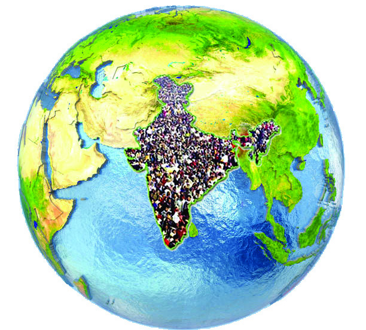
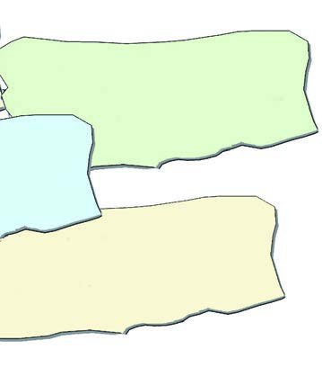
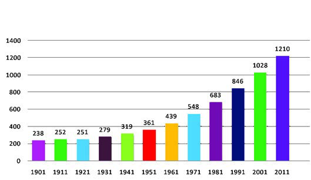
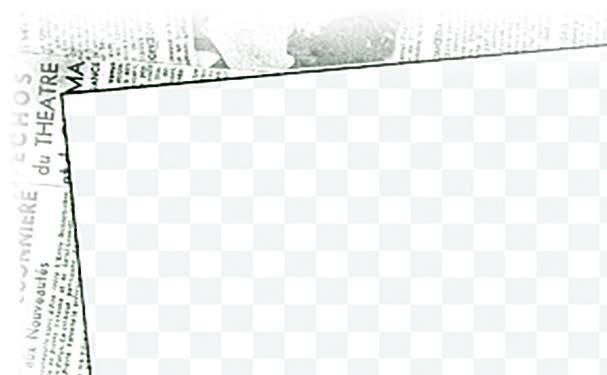
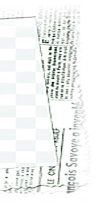
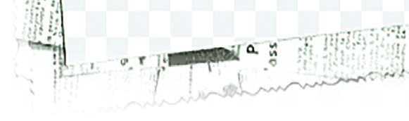
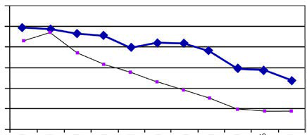

<!DOCTYPE html>
<html lang="ml">
<head>
  <meta charset="utf-8">
  <meta name="viewport" content="width=device-width, initial-scale=1.0">
  <title>Pages 81-100 - Class 9 Social science 1</title>
  <style>

:root {
  --bg-color: #fcfcfd;
  --card-bg: #ffffff;
  --text-color: #1e293b;
  --text-muted: #64748b;
  --primary-color: #0284c7;
  --primary-light: #e0f2fe;
  --border-color: #e2e8f0;
  --radius: 10px;
  --shadow: 0 4px 6px -1px rgb(0 0 0 / 0.05), 0 2px 4px -2px rgb(0 0 0 / 0.05);
}

body {
  font-family: -apple-system, BlinkMacSystemFont, "Segoe UI", Roboto, "Noto Sans Malayalam", "Manjari", "Gayathri", sans-serif;
  background-color: var(--bg-color);
  color: var(--text-color);
  line-height: 1.8;
  font-size: 1.1rem;
  margin: 0;
  padding: 0;
}

.container {
  max-width: 860px;
  margin: 0 auto;
  padding: 2.5rem 1.5rem 5rem 1.5rem;
}

header {
  margin-bottom: 2.5rem;
  padding-bottom: 1.5rem;
  border-bottom: 2px solid var(--border-color);
}

.badge-row {
  display: flex;
  gap: 0.5rem;
  margin-bottom: 0.75rem;
  flex-wrap: wrap;
}

.badge {
  display: inline-block;
  font-size: 0.75rem;
  font-weight: 700;
  text-transform: uppercase;
  letter-spacing: 0.05em;
  padding: 0.25rem 0.65rem;
  border-radius: 9999px;
  background: var(--primary-light);
  color: var(--primary-color);
}

.badge-medium {
  background: #fef3c7;
  color: #b45309;
}

.badge-class {
  background: #dcfce7;
  color: #15803d;
}

h1 {
  font-size: 2.1rem;
  font-weight: 800;
  margin: 0.5rem 0 1rem 0;
  line-height: 1.3;
  color: #0f172a;
}

.nav-bar {
  display: flex;
  justify-content: space-between;
  margin: 1.5rem 0;
  font-size: 0.95rem;
  flex-wrap: wrap;
  gap: 0.5rem;
}

.nav-bar a {
  color: var(--primary-color);
  text-decoration: none;
  font-weight: 600;
  padding: 0.5rem 1rem;
  border-radius: var(--radius);
  background: var(--card-bg);
  border: 1px solid var(--border-color);
  transition: all 0.2s ease;
}

.nav-bar a:hover {
  background: var(--primary-light);
  border-color: var(--primary-color);
}

.nav-bar .disabled {
  color: var(--text-muted);
  pointer-events: none;
  border-color: transparent;
  background: transparent;
}

.page-section {
  background: var(--card-bg);
  border: 1px solid var(--border-color);
  border-radius: var(--radius);
  box-shadow: var(--shadow);
  padding: 2rem;
  margin-bottom: 2.5rem;
}

.page-header {
  display: flex;
  align-items: center;
  justify-content: space-between;
  margin-bottom: 1.25rem;
  padding-bottom: 0.5rem;
  border-bottom: 1px dashed var(--border-color);
}

.page-number {
  font-size: 0.8rem;
  font-weight: 700;
  text-transform: uppercase;
  color: var(--text-muted);
  letter-spacing: 0.05em;
}

.page-content p {
  margin: 0 0 1.25rem 0;
  white-space: pre-wrap;
  word-break: break-word;
}

.page-content p:last-child {
  margin-bottom: 0;
}

.diagram-card {
  margin: 2rem 0;
  text-align: center;
  background: #f8fafc;
  border: 1px solid var(--border-color);
  border-radius: var(--radius);
  padding: 1rem;
  overflow: hidden;
}

.diagram-card img {
  max-width: 100%;
  height: auto;
  border-radius: calc(var(--radius) - 4px);
  display: inline-block;
  box-shadow: 0 2px 4px rgba(0,0,0,0.04);
}

.diagram-card figcaption {
  font-size: 0.85rem;
  color: var(--text-muted);
  margin-top: 0.75rem;
  font-weight: 500;
}

footer {
  margin-top: 3rem;
  padding-top: 2rem;
  border-top: 2px solid var(--border-color);
}

  </style>
</head>
<body>
  <div class="container">
    <header>
      <div class="badge-row">
        <span class="badge badge-class">Class 9</span>
        <span class="badge badge-medium">Malayalam Medium</span>
        <span class="badge">Social science 1</span>
        <span class="badge">Part 1</span>
      </div>
      <h1>Pages 81-100</h1>
      <div class="nav-bar"><a href="part_1_pages_6180.html">← Pages 61-80</a><a href="index.html">☰ Index</a><a href="part_1_pages_101104.html">Pages 101-104 →</a></div>
    </header>
    <main>
<section class="page-section" id="page-81">
  <div class="page-header"><span class="page-number">Page 81</span></div>
  <figure class="diagram-card" id="fig_ch05_p081_01"><figcaption>Figure fig_ch05_p081_01 (Page 81)</figcaption></figure>
  <figure class="diagram-card" id="fig_ch05_p081_02"><figcaption>Figure fig_ch05_p081_02 (Page 81)</figcaption></figure>
  <figure class="diagram-card" id="fig_ch05_p081_03"><figcaption>Figure fig_ch05_p081_03 (Page 81)</figcaption></figure>
  <figure class="diagram-card" id="fig_ch05_p081_04"><figcaption>Figure fig_ch05_p081_04 (Page 81)</figcaption></figure>
  <figure class="diagram-card" id="fig_ch05_p081_05"><figcaption>Figure fig_ch05_p081_05 (Page 81)</figcaption></figure>
  <figure class="diagram-card" id="fig_ch05_p081_06"><figcaption>Figure fig_ch05_p081_06 (Page 81)</figcaption></figure>
  <figure class="diagram-card" id="fig_ch05_p081_07"><figcaption>Figure fig_ch05_p081_07 (Page 81)</figcaption></figure>
  <figure class="diagram-card" id="fig_ch05_p081_08"><figcaption>Figure fig_ch05_p081_08 (Page 81)</figcaption></figure>
  <figure class="diagram-card" id="fig_ch05_p081_09"><figcaption>Figure fig_ch05_p081_09 (Page 81)</figcaption></figure>
  <figure class="diagram-card" id="fig_ch05_p081_10"><figcaption>Figure fig_ch05_p081_10 (Page 81)</figcaption></figure>
  <figure class="diagram-card" id="fig_ch05_p081_11"><figcaption>Figure fig_ch05_p081_11 (Page 81)</figcaption></figure>
  <figure class="diagram-card" id="fig_ch05_p081_12"><figcaption>Figure fig_ch05_p081_12 (Page 81)</figcaption></figure>
  <figure class="diagram-card" id="fig_ch05_p081_13"><figcaption>Figure fig_ch05_p081_13 (Page 81)</figcaption></figure>
  <div class="page-content">
    <p>gŦDzÄ‹Žv}†›¡e…›sšŽ“›†Dzš–c<br>ǢšÄ¢Å§-&lt;<br>81<br>–Ƃœc¢sš}‚›(Supreme Court)<br>†ƣ¡}ˆŽ¢Œšų‚†œ‚›ˆœ~Œš–Ƃœc¢sš}‚›†›“›ƴ“ų‚§1950 <br>z†“Ž› 28†š§†Dzžƴ—›š§fǚš†c–Ƃœc¢sš}‚›z§z›<br>ŒšŽ¡}r¢„Dzšu›s sšš“…›eˆĹ›ĕ§“ǡš§z§z›Œš¡Ž<br>sšš“…›Ú§ ŒƠš›†œÚc¡xƮų‚›†Ǭe…›sšŽcˆšƱ¡Œź›ƴ<br>†›ä›žŒš§xœ‰§zǢ›–c Œǯ§z§z›ŒšŽc–‚DzƂ‚›č¡xƮų‚c<br>Žšz› –ŒƱƀ›Úų‚c Žšȹˆ‚› ŒƠš¡sš§ “›“›…‚ŽĹ›Ǭ<br>†›Œ‚ƱÚāǫÚ§ ˆŽ›—šŽc †ƴsų¢‚š¡}šƀc –Ƃœc¢sš}‚›<br>‹Žv}†¡} ˆŽ¢Œšų‚ “DzštDzš‚š“šc Œ­›sš“sš”ā‘¡}<br>–cŽäsŽšc†›¡sšǬų<br>–Ƃœc¢sš}‚›¡}e…›sšŽāǫ<br>z iŁ“š…›sšŽc–Ƃœc¢sš}‚›Ú§ ŒšŅcˆŽ›—Ž›Úšťs’›ų<br>x› “›•ā‘š§ iŁ“š…›sšŽā‘¡} ˆŽ›…››ƴ “Žų‚§<br>i„š—Žc¢sů–cǚš†‚ƱÚāǫ<br>z eƀœƴˆŽ›u›Úš†Ǭe…›sšŽc–Ƃœc¢sš}‚›nǯ“c<br>iÅų  eƀœÆ¢sš}‚›š§ e‚¡sšĬ‚¡ų ŽšzDz¡Ĺ<br>n¡‚šŽ sœ’§¢Úš}‚›¡}c “›…››¢Ŷƴ“Žųeƀœsǫ<br>–ǵœsŽ›Úš†Ǭe…›sšŽc –Ƃœc¢sš}‚›ÚĬ§<br>z<br>iˆ¢„”se…›sšŽc Žšȹˆ‚›f“”Dz¡ƀ}ų<br>n¡‚šŽ “›•¡Ĺ –cŠŰ›ăc †›¢Œšˆ¢„”c<br>†Æs“šÄ –Ƃœc¢sš}‚›Ú§ ‹Žv}†šˆŽ<br>ŒšŠš…Dz‚Ĭ§<br>z ›Ğ§ e…›sšŽc   Œ­›sš“sš”āÇ cv›Ú<br>¡ƀ}¢ƠšÇe“¡}–cŽäšÅƒc ›Ğs‘¡}<br>ŽžˆĹ›ÆƂ¢‚DzsiŎ“sLj¡ƀ}“›ÚšÄ<br>–Ƃœc¢sš}‚›Ú§e…›sšŽŒĬ§<br>z ˆ†Ž“¢šs† e…›sšŽc   ‹Žv}†¡}<br>–cŽäsÅ mų xŒ‚ †›Å“—›Úų‚›Æ<br>†œ‚›†Dzš“›‹šuś†§nǯ“c sŽĹš›†›Æ<br>ڝų‚§ e‚›¡ź †œ‚›†Dzš ˆ†Ž“¢šs†<br>e…›sšŽŒš§<br>ˆŽǝŽ†›ũ“ce…›sšŽ–Ŧ†“c<br>(Checks and Balances)<br>‹Žv}†šˆŽŒš› u“ī¡Œź›¡ź e…›sšŽāǫ †›Œ†›Ʊƣšc<br>sšŽDz†›Ʊ“—c †œ‚›†Dzšc mųœ Œžų§ “›‹šuāǫښ› “›‹z›ă§<br>†Æs››Ž›Úų  mų›Žųšc g“Ʃ›}›Æ Þ›–—Œš pŽ<br>†œ‚›†Dzšˆ†Ž“¢šs†c<br>(Judicial Review)<br>ˆšƱ¡Œź§ˆš–šÚų†›Œā<br>‘¡}c sšŽDz†›Ʊ“—“›‹šuc<br>ˆ¡ƀ}“›ÚųiŎ“<br>s‘¡}c‹Žv}†š–š…‚<br>ˆŽ›¢”š…›Ú“š†ce“<br>‹Žv}†¡}“šÚsǫ¢Úš<br>eÅƒĹ›¢†š“›ŽŗŒš¡ų§<br>¢Šš…DzŒššƴe“¡‹Žv}<br>†š“›Žŗ¡Œų§ ƂtDzšˆ›Ú“š†<br>ŒǬ–Ƃœc¢sš}‚›¡}Ƃ¢‚Dzs<br>e…›sšŽŒš§†œ‚›†Dzš<br>ˆ†Ž“¢šs†e…›sšŽc<br>šs†</p>
  </div>
</section>
<section class="page-section" id="page-82">
  <div class="page-header"><span class="page-number">Page 82</span></div>
  <figure class="diagram-card" id="fig_ch05_p082_01"><figcaption>Figure fig_ch05_p082_01 (Page 82)</figcaption></figure>
  <figure class="diagram-card" id="fig_ch05_p082_02"><figcaption>Figure fig_ch05_p082_02 (Page 82)</figcaption></figure>
  <figure class="diagram-card" id="fig_ch05_p082_03"><figcaption>Figure fig_ch05_p082_03 (Page 82)</figcaption></figure>
  <figure class="diagram-card" id="fig_ch05_p082_04"><figcaption>Figure fig_ch05_p082_04 (Page 82)</figcaption></figure>
  <figure class="diagram-card" id="fig_ch05_p082_05"><figcaption>Figure fig_ch05_p082_05 (Page 82)</figcaption></figure>
  <figure class="diagram-card" id="fig_ch05_p082_06"><figcaption>Figure fig_ch05_p082_06 (Page 82)</figcaption></figure>
  <figure class="diagram-card" id="fig_ch05_p082_07"><figcaption>Figure fig_ch05_p082_07 (Page 82)</figcaption></figure>
  <figure class="diagram-card" id="fig_ch05_p082_08"><figcaption>Figure fig_ch05_p082_08 (Page 82)</figcaption></figure>
  <figure class="diagram-card" id="fig_ch05_p082_09"><figcaption>Figure fig_ch05_p082_09 (Page 82)</figcaption></figure>
  <figure class="diagram-card" id="fig_ch05_p082_10"><figcaption>Figure fig_ch05_p082_10 (Page 82)</figcaption></figure>
  <figure class="diagram-card" id="fig_ch05_p082_11"><figcaption>Figure fig_ch05_p082_11 (Page 82)</figcaption></figure>
  <figure class="diagram-card" id="fig_ch05_p082_12"><figcaption>Figure fig_ch05_p082_12 (Page 82)</figcaption></figure>
  <figure class="diagram-card" id="fig_ch05_p082_13"><figcaption>Figure fig_ch05_p082_13 (Page 82)</figcaption></figure>
  <figure class="diagram-card" id="fig_ch05_p082_14"><figcaption>Figure fig_ch05_p082_14 (Page 82)</figcaption></figure>
  <figure class="diagram-card" id="fig_ch05_p082_15"><figcaption>Figure fig_ch05_p082_15 (Page 82)</figcaption></figure>
  <figure class="diagram-card" id="fig_ch05_p082_16"><figcaption>Figure fig_ch05_p082_16 (Page 82)</figcaption></figure>
  <figure class="diagram-card" id="fig_ch05_p082_17"><figcaption>Figure fig_ch05_p082_17 (Page 82)</figcaption></figure>
  <figure class="diagram-card" id="fig_ch05_p082_18"><figcaption>Figure fig_ch05_p082_18 (Page 82)</figcaption></figure>
  <figure class="diagram-card" id="fig_ch05_p082_19"><figcaption>Figure fig_ch05_p082_19 (Page 82)</figcaption></figure>
  <figure class="diagram-card" id="fig_ch05_p082_20"><figcaption>Figure fig_ch05_p082_20 (Page 82)</figcaption></figure>
  <figure class="diagram-card" id="fig_ch05_p082_21"><figcaption>Figure fig_ch05_p082_21 (Page 82)</figcaption></figure>
  <figure class="diagram-card" id="fig_ch05_p082_22"><figcaption>Figure fig_ch05_p082_22 (Page 82)</figcaption></figure>
  <figure class="diagram-card" id="fig_ch05_p082_23"><figcaption>Figure fig_ch05_p082_23 (Page 82)</figcaption></figure>
  <figure class="diagram-card" id="fig_ch05_p082_24"><figcaption>Figure fig_ch05_p082_24 (Page 82)</figcaption></figure>
  <div class="page-content">
    <p>e…Dzšc<br>–šŒž—Dz”šȼc-<br>82<br>gŦDzċŽv}† z†š…›ˆ‚Dz¡Œų ‹Ž–c“›…š†¡Ĺc<br>ŒžDz<br>¡Ĺc e‚›¡ź  Žšȹ–ÿƺā‘›Æ iƀ›Úų e…›sšŽ¢sůœ<br>sŽc p’›“šÚų‚›†c ¢–ǵĄš…›ˆ‚Dz Ƃ“‚sǫ ‚}ų‚›†c<br>z†š…›ˆ‚Dzc<br>ˆŽ›ˆš›Úų‚›†c<br>¢“Ĭ›š§<br>u“ī¡Œź›¡ź<br>e…›sšŽc Œžų§ ”štsǫڛ}›ƴ “›‹z›ă§ †ƴs››Ž›Úų‚§<br>–ǵš‚ũDz–ŒŽĹ›¡ź<br>f”ā‘c<br>e‹›š•ā‘c<br>‹Žv}†<br>Œ¢ųšĞ“Ʃų ŒžDzā‘c „Ʊ”†ā‘c “Dz“ǚšˆ›‚ŒšÚš†Ǭ<br>NjŒā‘š§u“ī¡Œź›¡ź”šts‘›ž¡} †ƣ¡} Žšȹc†}ƀ›šÚ›<br>“Žų‚§<br>ˆŽǝŽ†›ũ“c n¢sšˆ†“c e…›sšŽƂ¢šuś¡<br>–Ŧ<br>†“c–š…DzŒšÚ“šÄ†ƣ¡}‹Žv}†Njŗ›ă›ĞĬ§<br>x“¡} ¡sš}Ĺ›Ž›Úų÷c†›Žœä›Ús<br>Šzǯ§ ˆŽ›u›Úƴ ¢xš¢„DzšĹŽ¢“‘ ‚}<br>ā› ŒšÅuā‘›ž¡} ms§–›sDzžĞœ“›¡†c<br>gcˆœă§¡Œź§ ¢ˆšǬ“›ž¡} z›•Dz››<br>¡c†›ũ›Ú“šťˆšƱ¡Œź›†§s’›c<br>†œ‚›†Dzšˆ†Ž“¢šs† e…›sšŽĹ›ž¡}<br>zœ•Dz›Ú§ˆšƱ¡Œź›¡†cms§–›sDzžĞœ<br>“›¡†c†›ũ›Ú“šť –š…›Úc<br>Š›ƽsǫÚ§ ecuœsšŽc<br>†ƴsƴ<br>„š—Ʊz›<br>ˆŽ›u›Úƴ z§z›Œš<br>Ž¡} †›Œ†c ǚc<br>Œšǯc<br>¢ˆšǬ“›ž¡}<br>ms§–›sDzžĞœ“›†§ ˆšƱ<br>¡Œź›¡†c<br>zœ•Dz›<br>¡c ⛍šŃsŒš›<br>†›ũ›Úš“ų‚š§<br>z ÍgŦDzÄ¡‰›–Ĺ›¡ź–“›¢”•‚sÇÎmų“›•Ĺ›Æ¡–Œ›†šÅ–cv}›<br>ƀ›Ús<br>z ‹Žv}†¡} e…›sšŽƀĞ›s›ƴ¡ƀ}ų Œžų ›Ǣs‘›ƴ †›“›ƴ mŅ<br>“›•āǫ“œ‚Œ¡Ĭų§ £Ɩ›¡} –—š¢Ĺš¡}s¡Ĭŝs<br>z †›Œ†›ƱƣšƂ⛍¡} “›“›… vĞāǫ iǫ¡ƀ}ų Žœ‚››ƴ pŽ ŒšĶsš<br>ˆšƱ¡Œź§㚖›ƴ–cv}›ƀ›Ús<br>z –Ƃœc¢sš}‚›¡} e…›sšŽāǫ –cŠŰ›ă§ †›Œ“›„u§…†Œš› pŽ e‹›Œtc<br>–cv}›ƀ›Ús<br>‚}ÅƂ“ÅņāÇ</p>
  </div>
</section>
<section class="page-section" id="page-83">
  <div class="page-header"><span class="page-number">Page 83</span></div>
  <figure class="diagram-card" id="fig_ch05_p083_01"><figcaption>Figure fig_ch05_p083_01 (Page 83)</figcaption></figure>
  <figure class="diagram-card" id="fig_ch05_p083_02"><figcaption>Figure fig_ch05_p083_02 (Page 83)</figcaption></figure>
  <figure class="diagram-card" id="fig_ch05_p083_03"><figcaption>Figure fig_ch05_p083_03 (Page 83)</figcaption></figure>
  <figure class="diagram-card" id="fig_ch05_p083_04"><figcaption>Figure fig_ch05_p083_04 (Page 83)</figcaption></figure>
  <figure class="diagram-card" id="fig_ch05_p083_05"><figcaption>Figure fig_ch05_p083_05 (Page 83)</figcaption></figure>
  <figure class="diagram-card" id="fig_ch05_p083_06"><figcaption>Figure fig_ch05_p083_06 (Page 83)</figcaption></figure>
  <figure class="diagram-card" id="fig_ch05_p083_07"><figcaption>Figure fig_ch05_p083_07 (Page 83)</figcaption></figure>
  <figure class="diagram-card" id="fig_ch05_p083_08"><figcaption>Figure fig_ch05_p083_08 (Page 83)</figcaption></figure>
  <figure class="diagram-card" id="fig_ch05_p083_09"><figcaption>Figure fig_ch05_p083_09 (Page 83)</figcaption></figure>
  <figure class="diagram-card" id="fig_ch05_p083_10"><figcaption>Figure fig_ch05_p083_10 (Page 83)</figcaption></figure>
  <figure class="diagram-card" id="fig_ch05_p083_11"><figcaption>Figure fig_ch05_p083_11 (Page 83)</figcaption></figure>
  <figure class="diagram-card" id="fig_ch05_p083_12"><figcaption>Figure fig_ch05_p083_12 (Page 83)</figcaption></figure>
  <div class="page-content">
    <p>gŦDz›¡<br>z†–ctDzšƂ“‚sÇ<br>5<br>gŦDz›¡eŒ›‚z†–ctDz<br>z†–ctDzc‹¢äDzšÆˆš„†<br>¢”•›c¢†Ʊڝ¢†Ʊ<br>gŦDz›¡s‚›ă<br>Žųz†–ctDz“Å…›ă“Žų<br>„šŽ›ŝDz“c¢ˆš•sš—šŽÚ“c<br>e‹›ŒtœsŽ›Úų<br>nǯ“cz†–ctDzǬŽšzDzc<br>gŦDz–¢Ŧš•›Ú¢Œš?<br>ˆŽ›ƛŒ›Ú¢Œš#<br>gŦDz›¡z†–ctDz¡‚š’›ÆƂ‚›<br>–Ű› „”äځڛ†§ f‘s¡‘<br>“›†uŽā‘›¢Ú§†›Úų<br>z†–ctDzš“Å…†“§f¢ŽšuDz¢Œt<br>›c zœ“›‚u†›“šŽĹ›c<br>„žŽ“DzšˆsŒšƂ‚›–Ű›<br>Ǖǐ›Úų<br>gŦDz›¡ z†–ctDz  s’Ʃų<br>pŽƂljc</p>
  </div>
</section>
<section class="page-section" id="page-84">
  <div class="page-header"><span class="page-number">Page 84</span></div>
  <figure class="diagram-card" id="fig_ch05_p084_01"><figcaption>Figure fig_ch05_p084_01 (Page 84)</figcaption></figure>
  <figure class="diagram-card" id="fig_ch05_p084_02"><figcaption>Figure fig_ch05_p084_02 (Page 84)</figcaption></figure>
  <figure class="diagram-card" id="fig_ch05_p084_03"><figcaption>Figure fig_ch05_p084_03 (Page 84)</figcaption></figure>
  <figure class="diagram-card" id="fig_ch05_p084_04"><figcaption>Figure fig_ch05_p084_04 (Page 84)</figcaption></figure>
  <figure class="diagram-card" id="fig_ch05_p084_05"><figcaption>Figure fig_ch05_p084_05 (Page 84)</figcaption></figure>
  <figure class="diagram-card" id="fig_ch05_p084_06"><figcaption>Figure fig_ch05_p084_06 (Page 84)</figcaption></figure>
  <figure class="diagram-card" id="fig_ch05_p084_07"><figcaption>Figure fig_ch05_p084_07 (Page 84)</figcaption></figure>
  <figure class="diagram-card" id="fig_ch05_p084_08"><figcaption>Figure fig_ch05_p084_08 (Page 84)</figcaption></figure>
  <figure class="diagram-card" id="fig_ch05_p084_09"><figcaption>Figure fig_ch05_p084_09 (Page 84)</figcaption></figure>
  <figure class="diagram-card" id="fig_ch05_p084_10"><figcaption>Figure fig_ch05_p084_10 (Page 84)</figcaption></figure>
  <figure class="diagram-card" id="fig_ch05_p084_11"><figcaption>Figure fig_ch05_p084_11 (Page 84)</figcaption></figure>
  <figure class="diagram-card" id="fig_ch05_p084_12"><figcaption>Figure fig_ch05_p084_12 (Page 84)</figcaption></figure>
  <figure class="diagram-card" id="fig_ch05_p084_13"><figcaption>Figure fig_ch05_p084_13 (Page 84)</figcaption></figure>
  <figure class="diagram-card" id="fig_ch05_p084_14"><figcaption>Figure fig_ch05_p084_14 (Page 84)</figcaption></figure>
  <figure class="diagram-card" id="fig_ch05_p084_15"><figcaption>Figure fig_ch05_p084_15 (Page 84)</figcaption></figure>
  <figure class="diagram-card" id="fig_ch05_p084_16"><figcaption>Figure fig_ch05_p084_16 (Page 84)</figcaption></figure>
  <div class="page-content">
    <p>e…DZšc<br>–šŒž—DZ”šȻc-<br>84<br>“šÅŚ‚¡ÚЧ “š›ă“¢Ƽš gŦDZ¡} z†–ctDZš“‘Å<br>ă¡Ú›ăš§g“–žx›ƀ›Úų‚§z†–ctDZ“Å…›Ú¢ƠšÇ<br>m¡Ŧš¡ÚƂLjā‘š§iĬšsų‚§?<br>z „šŽ›ŝDZc<br>z<br>¡‚š’››Ƽš§Œ<br>z ˆĞ››<br><br>z<br>pŽƂ¢„”ŧ†›DŽ›‚sš‘“›Æe…›“–›Úųz†ā‘¡}<br>f¡smĴŒš§fƂ¢„”¡Ĺz†–ctDZz†ā‘¡}mĴc<br>“Å…›Ú¢ƠšÇ ŽšzDZś¡ź –šŒž—›s–šƠśs ˆ¢Žšu<br>‚›¡ mā¡† Šš…›Úų¡“ų§ “šÅŚ‚¡ÚНsÇ –žx›<br>ƀ›Úų gŎśššÆ †ƣ¡} ŽšzDZś†§<br>–Ǚ›Ž<br>“›s–†c¢†}šÄ–š…›Ú¢Œš?‹žŒ››¡‹DZŒš“›‹“āÇښ<br>†ˆš‚›sŒš›z†–ctDZ¡†›ũ›¢ÚĬ‚¢Ƽ ?<br>2023¡<br>£Ǯ§<br>¢†•Ä–§<br>¢ˆšƀ<br>¢•Ä ‰Ĭ§<br>(UNFPA) ›¢ƀšÅЧ ƂsšŽc<br>¢šsz†–ctDZ 804.5 ¢sš}›c gŦDZ›¡<br>z†–ctDZ142.86 ¢sš}›Œš§<br>pŽ ŽšzDZś¡ź e¡Ƽÿ›Æ Ƃ¢„”Ĺ›¡ź<br>–šŒž—›s“›s–†–žx›s†›ÅĴ›Úų‚§<br>e“›}¡Ĺz†–ctDZš“›“ŽāÇz†††›ŽÚ§<br>ŒŽ†›ŽÚ§”›”ŒŽ†›ŽÚ§Ƃšv}†Œ‚<br>š“
sÚ›¡}Ĺš§e‚›†š›z†–c<br>tDZ¡}“DZ‚DZǘƂ“‚s¡‘cz†–ctDZš<br>v}†¡c s›ă§ †ǰŒ†Ǡ›š¢ÚĬ‚Ĭ§<br>z††ŒŽ†›ŽÚsÇ s}›¢Ǯc z†<br>–šů‚<br>‚}ā›<br>z†–ctDZšv}†¡<br>s›ă§ˆ~›Úų”šȻ”št¡z†–ctDZš<br>”šȻc (Demography)mųˆų<br>£ǯ§¢†•ť–§<br>¢ˆšƀ¢•ť‰Ĭ§<br>(UNFPA)<br>osDZŽšȸ–‹¡} sœ’›ǫ pŽ<br>eŦšŽšȸ nzť–›š§ £<br>Ǯ§ ¢†•ť–§ ¢ˆšƀ¢•ť‰Ĭ§<br>mƼš “DZޛsǪڝcŒ›săŽœ‚››<br>ǫ Ƃ‚DZÆˆš„† f¢ŽšuDZ–c“›<br>…š†āǪ –Ǵ¢Œ…šǫ s}cŠš<br>–žŅc ŒšĶf¢ŽšuDZˆŽ›ˆš†c<br>“¢šz†ˆŽ›ˆš†c–Œ÷£cu›<br>s“›„DZš‹DZš–cmų›“‹DZŒšÚsc<br>e‚“’› z†–ctDZ¡} “›s–†c<br>–š…DZŒšssc¡xƭsmų‚š§<br>g‚›¡źƂ…š†i¢Ŕ”DZc<br>pŽ Ƃ¢„”Ĺ›¡ź £““›…DZŒšÅų Œš†•›<br>s“›‹“ā¡‘c e‚›¡ź v}†šˆŽŒš<br>ŒšǮā¡‘c z†–ctDZš”šȻc “›”s†c¡xƭų h Œš†•›s“›‹“āÇ pŽ<br>–Œž—Ĺ›¡ź “›s–†Ĺ›†š›Ƃ¢šz†¡ƀ}Ĺš¡Œųǫ“›”„Œšˆ~†Žœ‚›<br>š§z†–ctDZš”šȻcmų‚¡sšĬ§eьšÚų‚§<br>x›Ğš z†–tDZšˆ~†Œš§ z†–ctDZš”šȻc (Demography). h ˆ„c ÷œÚ§ ˆ„<br>ā‘š Demos (z†āÇ
 Graphein “›”„œsŽ›Ús
 mų›“ ¢xÅųĬš‚š§</p>
  </div>
</section>
<section class="page-section" id="page-85">
  <div class="page-header"><span class="page-number">Page 85</span></div>
  <figure class="diagram-card" id="fig_ch05_p085_01"><figcaption>Figure fig_ch05_p085_01 (Page 85)</figcaption></figure>
  <figure class="diagram-card" id="fig_ch05_p085_02"><figcaption>Figure fig_ch05_p085_02 (Page 85)</figcaption></figure>
  <figure class="diagram-card" id="fig_ch05_p085_03"><figcaption>Figure fig_ch05_p085_03 (Page 85)</figcaption></figure>
  <figure class="diagram-card" id="fig_ch05_p085_04"><figcaption>Figure fig_ch05_p085_04 (Page 85)</figcaption></figure>
  <figure class="diagram-card" id="fig_ch05_p085_05"><figcaption>Figure fig_ch05_p085_05 (Page 85)</figcaption></figure>
  <figure class="diagram-card" id="fig_ch05_p085_06"><figcaption>Figure fig_ch05_p085_06 (Page 85)</figcaption></figure>
  <figure class="diagram-card" id="fig_ch05_p085_07"><figcaption>Figure fig_ch05_p085_07 (Page 85)</figcaption></figure>
  <figure class="diagram-card" id="fig_ch05_p085_08"><figcaption>Figure fig_ch05_p085_08 (Page 85)</figcaption></figure>
  <figure class="diagram-card" id="fig_ch05_p085_09"><figcaption>Figure fig_ch05_p085_09 (Page 85)</figcaption></figure>
  <figure class="diagram-card" id="fig_ch05_p085_10"><figcaption>Figure fig_ch05_p085_10 (Page 85)</figcaption></figure>
  <figure class="diagram-card" id="fig_ch05_p085_11"><figcaption>Figure fig_ch05_p085_11 (Page 85)</figcaption></figure>
  <figure class="diagram-card" id="fig_ch05_p085_12"><figcaption>Figure fig_ch05_p085_12 (Page 85)</figcaption></figure>
  <figure class="diagram-card" id="fig_ch05_p085_13"><figcaption>Figure fig_ch05_p085_13 (Page 85)</figcaption></figure>
  <div class="page-content">
    <p>gŦDZ›¡z†–ctDZšƂ“‚sÇ<br>ǡšÄ¢Å§-&lt;<br>85<br>z†ā¡‘ڝ›ăǫ “›“Ž¡Ĺš›‚§ –žx›ƀ›Úų‚§ z†<br>–ctDZŒš› ŠŰ¡ƀĞ Ƃ“‚s¡‘c Ƃ⛍s¡‘c<br>s›ă§g‚§ˆ~›Úų<br>z†–ctDZ¡}“ƀ¡Ĺ –Ǵš…œ†›Úųv}sā‘š§z††c<br>ŒŽcs}›¢Ǯc‚}ā›“pŽƂ¢„”¡Ĺz†–ctDZš“ƀ<br>ś†§ (size of population) ŒšǮŒĬšsų‚§g“¡}e‘“›††–<br>Ž›ăš§pŽƂ¢„”¡Ĺz†–ctDZ¡}v}†¡c⌜sŽ<br>¡Ĺc (structure and composition of population) Œ†Ǡ›šÚų‚§<br>e“›¡}ǫ“Ž¡}Ƃšv}†ȻœˆŽ•š†ˆš‚cfNJ›‚š†<br>ˆš‚c‚}ā›“sÚ›¡}Ĺš§<br>pŽ Ƃ¢„”ŝ ‚šŒ–›Úų z†ā‘¡} x›Ğš „Ĺ¢”tŽ<br>Ĺ›žų›ǫ –Å¡“ ¡–Ä––§ ‚}ā›“ e}›Ǚš†Œš<br>ڛš§ mƼš z†–ctDZšˆ~†ā‘c †}ŝų‚§ z†–ctDZš<br>”šȻś¡ź–ÿƹ†āÇŒ›Ú‚ce†ˆš‚Ĺ›¡źc†›ŽÚ<br>s‘¡}cŽžˆĹ›š§ –žx›ƀ›Úų‚§i„š—ŽŒš›z††<br>†›ŽÚ§ ŒŽ†›ŽÚ§ ȻœˆŽ•š†ˆš‚c fNJ›‚š†ˆš‚c<br>Œ‚š“<br>z†–ctDZš”šȻś¡ź ŽĬ”šts‘š§ –šŒž—›s z†–ctDZš<br>”šȻ“crˆxšŽ›sz†–ctDZš”šȻ“c<br>–šŒž—›s z†–ctDZš”šȻc<br>(Social Demography)z†–ctDZ<br>¡} v}†c e“¡}<br>ŒšǮś¡ź<br>sšŽā‘c<br>e†ŦŽ‰ā‘c e¢†Ǵ•›<br>ڝųpŽƂ¢„”¡Ĺ –šŒž<br>—›s–šƠśsŽšȸœŽœ‚›<br>sÇڝ Ƃš…š†DZc †Æsų<br>rˆxšŽ›s<br>z†–ctDZš”šȻ<br>śÆ (Formal Demography) z†<br>–ctDZšŒšǮś¡źv}sā¡‘e‘<br>ڝsc“›”s†c†}ŝsc<br>¡xƭųrˆxšŽ›sz†–ctDZš<br>”šȻˆ~†Ĺ›†§ i„š—ŽŒš§<br>z†–ctDZšs¡Ú}ƀ§ (Census).<br>g‚§ŽšzDZ¡Ĺz†ā‘¡}mĴc<br>Ƃšv}†ȻœˆŽ•š†ˆš‚c<br>–šŒž—›s–šƠśsš“Ǚ‚}<br>ā›„ĹāÇ¢”tŽ›ă§“›”s†c<br>¡xƭų<br>z gŦDZ›Æ¡–Ä––§fŽc‹›ă‚§m¢ƀš’š§ ?<br>zgŦDZ›Æe“–š†¡Ĺ ¡–Ä––§†}ų‚§m¢ƀš’š§ ?<br>gŦDZ›Æ ¡–Ä––§ Ƃ“ÅņāÇÚ§<br>¢†Ķ‚Ǵc †Æsų‚§<br>Žz›–§ğšÅz†Æfź§ ¡–Ä––§sƣœ•Åq‰§gŦDZš§<br>¢šsś¡ nǮ“c “› ¡–Ä––§ gŦDZ¢}‚š§ –š…š<br>Žš› ˆĹ“Å•Ĺ›Æ pŽ›Úš§ gŦDZ›Æ ¡–Ä––§<br>†}ŝų‚§</p>
  </div>
</section>
<section class="page-section" id="page-86">
  <div class="page-header"><span class="page-number">Page 86</span></div>
  <figure class="diagram-card" id="fig_ch05_p086_01"><figcaption>Figure fig_ch05_p086_01 (Page 86)</figcaption></figure>
  <figure class="diagram-card" id="fig_ch05_p086_02"><figcaption>Figure fig_ch05_p086_02 (Page 86)</figcaption></figure>
  <figure class="diagram-card" id="fig_ch05_p086_03"><figcaption>Figure fig_ch05_p086_03 (Page 86)</figcaption></figure>
  <figure class="diagram-card" id="fig_ch05_p086_04"><figcaption>Figure fig_ch05_p086_04 (Page 86)</figcaption></figure>
  <figure class="diagram-card" id="fig_ch05_p086_05"><figcaption>Figure fig_ch05_p086_05 (Page 86)</figcaption></figure>
  <figure class="diagram-card" id="fig_ch05_p086_06"><figcaption>Figure fig_ch05_p086_06 (Page 86)</figcaption></figure>
  <figure class="diagram-card" id="fig_ch05_p086_07"><figcaption>Figure fig_ch05_p086_07 (Page 86)</figcaption></figure>
  <figure class="diagram-card" id="fig_ch05_p086_08"><figcaption>Figure fig_ch05_p086_08 (Page 86)</figcaption></figure>
  <figure class="diagram-card" id="fig_ch05_p086_09"><figcaption>Figure fig_ch05_p086_09 (Page 86)</figcaption></figure>
  <figure class="diagram-card" id="fig_ch05_p086_10"><figcaption>Figure fig_ch05_p086_10 (Page 86)</figcaption></figure>
  <figure class="diagram-card" id="fig_ch05_p086_11"><figcaption>Figure fig_ch05_p086_11 (Page 86)</figcaption></figure>
  <figure class="diagram-card" id="fig_ch05_p086_12"><figcaption>Figure fig_ch05_p086_12 (Page 86)</figcaption></figure>
  <figure class="diagram-card" id="fig_ch05_p086_13"><figcaption>Figure fig_ch05_p086_13 (Page 86)</figcaption></figure>
  <figure class="diagram-card" id="fig_ch05_p086_14"><figcaption>Figure fig_ch05_p086_14 (Page 86)</figcaption></figure>
  <figure class="diagram-card" id="fig_ch05_p086_15"><figcaption>Figure fig_ch05_p086_15 (Page 86)</figcaption></figure>
  <figure class="diagram-card" id="fig_ch05_p086_16"><figcaption>Figure fig_ch05_p086_16 (Page 86)</figcaption></figure>
  <figure class="diagram-card" id="fig_ch05_p086_17"><figcaption>Figure fig_ch05_p086_17 (Page 86)</figcaption></figure>
  <figure class="diagram-card" id="fig_ch05_p086_18"><figcaption>Figure fig_ch05_p086_18 (Page 86)</figcaption></figure>
  <figure class="diagram-card" id="fig_ch05_p086_19"><figcaption>Figure fig_ch05_p086_19 (Page 86)</figcaption></figure>
  <div class="page-content">
    <p>e…DZšc<br>–šŒž—DZ”šȻc-<br>86<br>gŦDz¡}z†–ctDzš“‘Åă<br>f¡sz†–ctDz<br>„”äśÆ
<br>Source: Census of India 2011 (Provisional).<br>website: http//censusindia.gov.in<br>†Æs››ĞǫˆĞ›sc÷š‰c†›Žœä›ă§gŦDZ<br>›¡z†–ctDZš“‘Åă¡Ú›ă§s›ƀ§‚ƭšš<br>ڝs<br>“Å•c<br>f¡sz†–ctDz<br>„”äśÆ
<br>1901<br>238<br>1911<br>252<br>1921<br>251<br>1931<br>279<br>1941<br>319<br>1951<br>361<br>1961<br>439<br>1971<br>548<br>1981<br>683<br>1991<br>846<br>2001<br>1028<br>2011<br>1210<br>z†–ctDzš”šȼś¡ź–šŒž—›sƂš…š†Dzc<br>£““›…DZŒšÅų z†–ctDZ¡Ú›ăš§ z†–ctDZš”šȻc ˆ~†“›¢…ŒšÚų‚§<br>z†–ctDZ¡}x†šŃs‚¡c“›s–†¡Ĺcs›ă§ˆ~›Úųz†–ctDZ<br>¡} “›”s†c –š…DZŒšsų‚§ e‚§ –šŒž—›s –š—xŽDZā‘Œš› g’¢xÅų§<br>†›Æڝ¢Ơš’š§–šŒž—›sz†–ctDZš”šȻcz†–ctDZšv}†cŒšǮ“c–cŠ<br>ۛăǫe¢†Ǵ•“ce‚§mā¡† –Œž—”šȻˆŽŒšv}sā‘Œš›Ƃ¢„”c<br>Œ‚czš‚›¡zÄÅŒ‚š“
g}¡ˆ}ųmų‚š§ £ssšŽDZc ¡xƭų‚§pŽ<br>Ƃ¢„”¡Ĺz†–ctDZšv}sāÇfƂ¢„”¡Ĺ“›“›…–šŒž—›sv}sā‘Œš›<br>mā¡†ŠŰ¡ƀĞ›Ž›Úų¡“ų§ –šŒž—›sz†–ctDZš”šȻc“›”s†c¡xƭų<br>gŎśÆz†–ctDZš”šȻˆ~†cpŽ –šŒž—œsŽƂ⛍š§<br>–šŒž—›sv}sāÇ<br>z –cǗšŽc<br>z “’ÚāÇ<br>z Œ‚c<br>z –šŒž—›s†›ũc<br>z –šƠśsc<br>z –Œ„šcŒ‚š“<br>z†–ctDzšv}sāÇ<br>£“<br>gŦDZ›Æ z†–ctDZšˆ~†c †}ŝų Ƃ…š†¡ƀĞ<br>Ǚšˆ†ā‘š§<br>†š•Æ<br>ǡšǮ›ǡ›ÚÆq‰œ–§ (NSO), †œ‚›f¢šu§ (National Institution for Transforming India),<br>†š•Æ gÄǡ›ǮDZžĞ§ ¢‰šÅ ¢ˆšƀ¢•Ä –Ä––§ (NIPS) †š•Æ ‰šŒ››<br>¡—Æŧ –Å¢“ (NFHS) ‚}ā›“<br>z z†–ctDZš“ƀc<br>z Ƃš“c›cuˆ„“›c<br>z z†–ctDZšŒšǮc<br>z f‹DZŦŽs}›¢Ǯc<br>z ŽšzDZšŦŽs}›¢Ǯc<br>z ¢Žšuš‚Ž‚Œ‚š“</p>
  </div>
</section>
<section class="page-section" id="page-87">
  <div class="page-header"><span class="page-number">Page 87</span></div>
  <figure class="diagram-card" id="fig_ch05_p087_01"><figcaption>Figure fig_ch05_p087_01 (Page 87)</figcaption></figure>
  <figure class="diagram-card" id="fig_ch05_p087_02"><figcaption>Figure fig_ch05_p087_02 (Page 87)</figcaption></figure>
  <figure class="diagram-card" id="fig_ch05_p087_03"><figcaption>Figure fig_ch05_p087_03 (Page 87)</figcaption></figure>
  <figure class="diagram-card" id="fig_ch05_p087_04"><figcaption>Figure fig_ch05_p087_04 (Page 87)</figcaption></figure>
  <figure class="diagram-card" id="fig_ch05_p087_05"><figcaption>Figure fig_ch05_p087_05 (Page 87)</figcaption></figure>
  <figure class="diagram-card" id="fig_ch05_p087_06"><figcaption>Figure fig_ch05_p087_06 (Page 87)</figcaption></figure>
  <figure class="diagram-card" id="fig_ch05_p087_07"><figcaption>Figure fig_ch05_p087_07 (Page 87)</figcaption></figure>
  <figure class="diagram-card" id="fig_ch05_p087_08"><figcaption>Figure fig_ch05_p087_08 (Page 87)</figcaption></figure>
  <figure class="diagram-card" id="fig_ch05_p087_09"><figcaption>Figure fig_ch05_p087_09 (Page 87)</figcaption></figure>
  <figure class="diagram-card" id="fig_ch05_p087_10"><figcaption>Figure fig_ch05_p087_10 (Page 87)</figcaption></figure>
  <figure class="diagram-card" id="fig_ch05_p087_11"><figcaption>Figure fig_ch05_p087_11 (Page 87)</figcaption></figure>
  <figure class="diagram-card" id="fig_ch05_p087_12"><figcaption>Figure fig_ch05_p087_12 (Page 87)</figcaption></figure>
  <figure class="diagram-card" id="fig_ch05_p087_13"><figcaption>Figure fig_ch05_p087_13 (Page 87)</figcaption></figure>
  <figure class="diagram-card" id="fig_ch05_p087_14"><figcaption>Figure fig_ch05_p087_14 (Page 87)</figcaption></figure>
  <figure class="diagram-card" id="fig_ch05_p087_15"><figcaption>Figure fig_ch05_p087_15 (Page 87)</figcaption></figure>
  <figure class="diagram-card" id="fig_ch05_p087_16"><figcaption>Figure fig_ch05_p087_16 (Page 87)</figcaption></figure>
  <figure class="diagram-card" id="fig_ch05_p087_17"><figcaption>Figure fig_ch05_p087_17 (Page 87)</figcaption></figure>
  <figure class="diagram-card" id="fig_ch05_p087_18"><figcaption>Figure fig_ch05_p087_18 (Page 87)</figcaption></figure>
  <figure class="diagram-card" id="fig_ch05_p087_19"><figcaption>Figure fig_ch05_p087_19 (Page 87)</figcaption></figure>
  <figure class="diagram-card" id="fig_ch05_p087_20"><figcaption>Figure fig_ch05_p087_20 (Page 87)</figcaption></figure>
  <figure class="diagram-card" id="fig_ch05_p087_21"><figcaption>Figure fig_ch05_p087_21 (Page 87)</figcaption></figure>
  <figure class="diagram-card" id="fig_ch05_p087_22"><figcaption>Figure fig_ch05_p087_22 (Page 87)</figcaption></figure>
  <figure class="diagram-card" id="fig_ch05_p087_23"><figcaption>Figure fig_ch05_p087_23 (Page 87)</figcaption></figure>
  <figure class="diagram-card" id="fig_ch05_p087_24"><figcaption>Figure fig_ch05_p087_24 (Page 87)</figcaption></figure>
  <figure class="diagram-card" id="fig_ch05_p087_25"><figcaption>Figure fig_ch05_p087_25 (Page 87)</figcaption></figure>
  <figure class="diagram-card" id="fig_ch05_p087_26"><figcaption>Figure fig_ch05_p087_26 (Page 87)</figcaption></figure>
  <figure class="diagram-card" id="fig_ch05_p087_27"><figcaption>Figure fig_ch05_p087_27 (Page 87)</figcaption></figure>
  <figure class="diagram-card" id="fig_ch05_p087_28"><figcaption>Figure fig_ch05_p087_28 (Page 87)</figcaption></figure>
  <figure class="diagram-card" id="fig_ch05_p087_29"><figcaption>Figure fig_ch05_p087_29 (Page 87)</figcaption></figure>
  <figure class="diagram-card" id="fig_ch05_p087_30"><figcaption>Figure fig_ch05_p087_30 (Page 87)</figcaption></figure>
  <figure class="diagram-card" id="fig_ch05_p087_31"><figcaption>Figure fig_ch05_p087_31 (Page 87)</figcaption></figure>
  <figure class="diagram-card" id="fig_ch05_p087_32"><figcaption>Figure fig_ch05_p087_32 (Page 87)</figcaption></figure>
  <figure class="diagram-card" id="fig_ch05_p087_33"><figcaption>Figure fig_ch05_p087_33 (Page 87)</figcaption></figure>
  <figure class="diagram-card" id="fig_ch05_p087_34"><figcaption>Figure fig_ch05_p087_34 (Page 87)</figcaption></figure>
  <figure class="diagram-card" id="fig_ch05_p087_35"><figcaption>Figure fig_ch05_p087_35 (Page 87)</figcaption></figure>
  <figure class="diagram-card" id="fig_ch05_p087_36"><figcaption>Figure fig_ch05_p087_36 (Page 87)</figcaption></figure>
  <figure class="diagram-card" id="fig_ch05_p087_37"><figcaption>Figure fig_ch05_p087_37 (Page 87)</figcaption></figure>
  <figure class="diagram-card" id="fig_ch05_p087_38"><figcaption>Figure fig_ch05_p087_38 (Page 87)</figcaption></figure>
  <figure class="diagram-card" id="fig_ch05_p087_39"><figcaption>Figure fig_ch05_p087_39 (Page 87)</figcaption></figure>
  <figure class="diagram-card" id="fig_ch05_p087_40"><figcaption>Figure fig_ch05_p087_40 (Page 87)</figcaption></figure>
  <figure class="diagram-card" id="fig_ch05_p087_41"><figcaption>Figure fig_ch05_p087_41 (Page 87)</figcaption></figure>
  <figure class="diagram-card" id="fig_ch05_p087_42"><figcaption>Figure fig_ch05_p087_42 (Page 87)</figcaption></figure>
  <figure class="diagram-card" id="fig_ch05_p087_43"><figcaption>Figure fig_ch05_p087_43 (Page 87)</figcaption></figure>
  <figure class="diagram-card" id="fig_ch05_p087_44"><figcaption>Figure fig_ch05_p087_44 (Page 87)</figcaption></figure>
  <figure class="diagram-card" id="fig_ch05_p087_45"><figcaption>Figure fig_ch05_p087_45 (Page 87)</figcaption></figure>
  <figure class="diagram-card" id="fig_ch05_p087_46"><figcaption>Figure fig_ch05_p087_46 (Page 87)</figcaption></figure>
  <figure class="diagram-card" id="fig_ch05_p087_47"><figcaption>Figure fig_ch05_p087_47 (Page 87)</figcaption></figure>
  <figure class="diagram-card" id="fig_ch05_p087_48"><figcaption>Figure fig_ch05_p087_48 (Page 87)</figcaption></figure>
  <figure class="diagram-card" id="fig_ch05_p087_49"><figcaption>Figure fig_ch05_p087_49 (Page 87)</figcaption></figure>
  <figure class="diagram-card" id="fig_ch05_p087_50"><figcaption>Figure fig_ch05_p087_50 (Page 87)</figcaption></figure>
  <figure class="diagram-card" id="fig_ch05_p087_51"><figcaption>Figure fig_ch05_p087_51 (Page 87)</figcaption></figure>
  <figure class="diagram-card" id="fig_ch05_p087_52"><figcaption>Figure fig_ch05_p087_52 (Page 87)</figcaption></figure>
  <figure class="diagram-card" id="fig_ch05_p087_53"><figcaption>Figure fig_ch05_p087_53 (Page 87)</figcaption></figure>
  <figure class="diagram-card" id="fig_ch05_p087_54"><figcaption>Figure fig_ch05_p087_54 (Page 87)</figcaption></figure>
  <figure class="diagram-card" id="fig_ch05_p087_55"><figcaption>Figure fig_ch05_p087_55 (Page 87)</figcaption></figure>
  <figure class="diagram-card" id="fig_ch05_p087_56"><figcaption>Figure fig_ch05_p087_56 (Page 87)</figcaption></figure>
  <figure class="diagram-card" id="fig_ch05_p087_57"><figcaption>Figure fig_ch05_p087_57 (Page 87)</figcaption></figure>
  <figure class="diagram-card" id="fig_ch05_p087_58"><figcaption>Figure fig_ch05_p087_58 (Page 87)</figcaption></figure>
  <figure class="diagram-card" id="fig_ch05_p087_59"><figcaption>Figure fig_ch05_p087_59 (Page 87)</figcaption></figure>
  <figure class="diagram-card" id="fig_ch05_p087_60"><figcaption>Figure fig_ch05_p087_60 (Page 87)</figcaption></figure>
  <figure class="diagram-card" id="fig_ch05_p087_61"><figcaption>Figure fig_ch05_p087_61 (Page 87)</figcaption></figure>
  <figure class="diagram-card" id="fig_ch05_p087_62"><figcaption>Figure fig_ch05_p087_62 (Page 87)</figcaption></figure>
  <figure class="diagram-card" id="fig_ch05_p087_63"><figcaption>Figure fig_ch05_p087_63 (Page 87)</figcaption></figure>
  <figure class="diagram-card" id="fig_ch05_p087_64"><figcaption>Figure fig_ch05_p087_64 (Page 87)</figcaption></figure>
  <figure class="diagram-card" id="fig_ch05_p087_65"><figcaption>Figure fig_ch05_p087_65 (Page 87)</figcaption></figure>
  <figure class="diagram-card" id="fig_ch05_p087_66"><figcaption>Figure fig_ch05_p087_66 (Page 87)</figcaption></figure>
  <figure class="diagram-card" id="fig_ch05_p087_67"><figcaption>Figure fig_ch05_p087_67 (Page 87)</figcaption></figure>
  <figure class="diagram-card" id="fig_ch05_p087_68"><figcaption>Figure fig_ch05_p087_68 (Page 87)</figcaption></figure>
  <figure class="diagram-card" id="fig_ch05_p087_69"><figcaption>Figure fig_ch05_p087_69 (Page 87)</figcaption></figure>
  <figure class="diagram-card" id="fig_ch05_p087_70"><figcaption>Figure fig_ch05_p087_70 (Page 87)</figcaption></figure>
  <figure class="diagram-card" id="fig_ch05_p087_71"><figcaption>Figure fig_ch05_p087_71 (Page 87)</figcaption></figure>
  <figure class="diagram-card" id="fig_ch05_p087_72"><figcaption>Figure fig_ch05_p087_72 (Page 87)</figcaption></figure>
  <figure class="diagram-card" id="fig_ch05_p087_73"><figcaption>Figure fig_ch05_p087_73 (Page 87)</figcaption></figure>
  <figure class="diagram-card" id="fig_ch05_p087_74"><figcaption>Figure fig_ch05_p087_74 (Page 87)</figcaption></figure>
  <figure class="diagram-card" id="fig_ch05_p087_75"><figcaption>Figure fig_ch05_p087_75 (Page 87)</figcaption></figure>
  <figure class="diagram-card" id="fig_ch05_p087_76"><figcaption>Figure fig_ch05_p087_76 (Page 87)</figcaption></figure>
  <figure class="diagram-card" id="fig_ch05_p087_77"><figcaption>Figure fig_ch05_p087_77 (Page 87)</figcaption></figure>
  <figure class="diagram-card" id="fig_ch05_p087_78"><figcaption>Figure fig_ch05_p087_78 (Page 87)</figcaption></figure>
  <figure class="diagram-card" id="fig_ch05_p087_79"><figcaption>Figure fig_ch05_p087_79 (Page 87)</figcaption></figure>
  <figure class="diagram-card" id="fig_ch05_p087_80"><figcaption>Figure fig_ch05_p087_80 (Page 87)</figcaption></figure>
  <figure class="diagram-card" id="fig_ch05_p087_81"><figcaption>Figure fig_ch05_p087_81 (Page 87)</figcaption></figure>
  <figure class="diagram-card" id="fig_ch05_p087_82"><figcaption>Figure fig_ch05_p087_82 (Page 87)</figcaption></figure>
  <figure class="diagram-card" id="fig_ch05_p087_83"><figcaption>Figure fig_ch05_p087_83 (Page 87)</figcaption></figure>
  <figure class="diagram-card" id="fig_ch05_p087_84"><figcaption>Figure fig_ch05_p087_84 (Page 87)</figcaption></figure>
  <figure class="diagram-card" id="fig_ch05_p087_85"><figcaption>Figure fig_ch05_p087_85 (Page 87)</figcaption></figure>
  <figure class="diagram-card" id="fig_ch05_p087_86"><figcaption>Figure fig_ch05_p087_86 (Page 87)</figcaption></figure>
  <figure class="diagram-card" id="fig_ch05_p087_87"><figcaption>Figure fig_ch05_p087_87 (Page 87)</figcaption></figure>
  <figure class="diagram-card" id="fig_ch05_p087_88"><figcaption>Figure fig_ch05_p087_88 (Page 87)</figcaption></figure>
  <figure class="diagram-card" id="fig_ch05_p087_89"><figcaption>Figure fig_ch05_p087_89 (Page 87)</figcaption></figure>
  <figure class="diagram-card" id="fig_ch05_p087_90"><figcaption>Figure fig_ch05_p087_90 (Page 87)</figcaption></figure>
  <figure class="diagram-card" id="fig_ch05_p087_91"><figcaption>Figure fig_ch05_p087_91 (Page 87)</figcaption></figure>
  <figure class="diagram-card" id="fig_ch05_p087_92"><figcaption>Figure fig_ch05_p087_92 (Page 87)</figcaption></figure>
  <figure class="diagram-card" id="fig_ch05_p087_93"><figcaption>Figure fig_ch05_p087_93 (Page 87)</figcaption></figure>
  <figure class="diagram-card" id="fig_ch05_p087_94"><figcaption>Figure fig_ch05_p087_94 (Page 87)</figcaption></figure>
  <figure class="diagram-card" id="fig_ch05_p087_95"><figcaption>Figure fig_ch05_p087_95 (Page 87)</figcaption></figure>
  <figure class="diagram-card" id="fig_ch05_p087_96"><figcaption>Figure fig_ch05_p087_96 (Page 87)</figcaption></figure>
  <figure class="diagram-card" id="fig_ch05_p087_97"><figcaption>Figure fig_ch05_p087_97 (Page 87)</figcaption></figure>
  <figure class="diagram-card" id="fig_ch05_p087_98"><figcaption>Figure fig_ch05_p087_98 (Page 87)</figcaption></figure>
  <figure class="diagram-card" id="fig_ch05_p087_99"><figcaption>Figure fig_ch05_p087_99 (Page 87)</figcaption></figure>
  <figure class="diagram-card" id="fig_ch05_p087_100"><figcaption>Figure fig_ch05_p087_100 (Page 87)</figcaption></figure>
  <figure class="diagram-card" id="fig_ch05_p087_101"><figcaption>Figure fig_ch05_p087_101 (Page 87)</figcaption></figure>
  <figure class="diagram-card" id="fig_ch05_p087_102"><figcaption>Figure fig_ch05_p087_102 (Page 87)</figcaption></figure>
  <figure class="diagram-card" id="fig_ch05_p087_103"><figcaption>Figure fig_ch05_p087_103 (Page 87)</figcaption></figure>
  <figure class="diagram-card" id="fig_ch05_p087_104"><figcaption>Figure fig_ch05_p087_104 (Page 87)</figcaption></figure>
  <figure class="diagram-card" id="fig_ch05_p087_105"><figcaption>Figure fig_ch05_p087_105 (Page 87)</figcaption></figure>
  <figure class="diagram-card" id="fig_ch05_p087_106"><figcaption>Figure fig_ch05_p087_106 (Page 87)</figcaption></figure>
  <figure class="diagram-card" id="fig_ch05_p087_107"><figcaption>Figure fig_ch05_p087_107 (Page 87)</figcaption></figure>
  <figure class="diagram-card" id="fig_ch05_p087_108"><figcaption>Figure fig_ch05_p087_108 (Page 87)</figcaption></figure>
  <figure class="diagram-card" id="fig_ch05_p087_109"><figcaption>Figure fig_ch05_p087_109 (Page 87)</figcaption></figure>
  <figure class="diagram-card" id="fig_ch05_p087_110"><figcaption>Figure fig_ch05_p087_110 (Page 87)</figcaption></figure>
  <figure class="diagram-card" id="fig_ch05_p087_111"><figcaption>Figure fig_ch05_p087_111 (Page 87)</figcaption></figure>
  <figure class="diagram-card" id="fig_ch05_p087_112"><figcaption>Figure fig_ch05_p087_112 (Page 87)</figcaption></figure>
  <figure class="diagram-card" id="fig_ch05_p087_113"><figcaption>Figure fig_ch05_p087_113 (Page 87)</figcaption></figure>
  <figure class="diagram-card" id="fig_ch05_p087_114"><figcaption>Figure fig_ch05_p087_114 (Page 87)</figcaption></figure>
  <figure class="diagram-card" id="fig_ch05_p087_115"><figcaption>Figure fig_ch05_p087_115 (Page 87)</figcaption></figure>
  <figure class="diagram-card" id="fig_ch05_p087_116"><figcaption>Figure fig_ch05_p087_116 (Page 87)</figcaption></figure>
  <figure class="diagram-card" id="fig_ch05_p087_117"><figcaption>Figure fig_ch05_p087_117 (Page 87)</figcaption></figure>
  <figure class="diagram-card" id="fig_ch05_p087_118"><figcaption>Figure fig_ch05_p087_118 (Page 87)</figcaption></figure>
  <figure class="diagram-card" id="fig_ch05_p087_119"><figcaption>Figure fig_ch05_p087_119 (Page 87)</figcaption></figure>
  <figure class="diagram-card" id="fig_ch05_p087_120"><figcaption>Figure fig_ch05_p087_120 (Page 87)</figcaption></figure>
  <figure class="diagram-card" id="fig_ch05_p087_121"><figcaption>Figure fig_ch05_p087_121 (Page 87)</figcaption></figure>
  <figure class="diagram-card" id="fig_ch05_p087_122"><figcaption>Figure fig_ch05_p087_122 (Page 87)</figcaption></figure>
  <figure class="diagram-card" id="fig_ch05_p087_123"><figcaption>Figure fig_ch05_p087_123 (Page 87)</figcaption></figure>
  <figure class="diagram-card" id="fig_ch05_p087_124"><figcaption>Figure fig_ch05_p087_124 (Page 87)</figcaption></figure>
  <figure class="diagram-card" id="fig_ch05_p087_125"><figcaption>Figure fig_ch05_p087_125 (Page 87)</figcaption></figure>
  <figure class="diagram-card" id="fig_ch05_p087_126"><figcaption>Figure fig_ch05_p087_126 (Page 87)</figcaption></figure>
  <figure class="diagram-card" id="fig_ch05_p087_127"><figcaption>Figure fig_ch05_p087_127 (Page 87)</figcaption></figure>
  <figure class="diagram-card" id="fig_ch05_p087_128"><figcaption>Figure fig_ch05_p087_128 (Page 87)</figcaption></figure>
  <figure class="diagram-card" id="fig_ch05_p087_129"><figcaption>Figure fig_ch05_p087_129 (Page 87)</figcaption></figure>
  <figure class="diagram-card" id="fig_ch05_p087_130"><figcaption>Figure fig_ch05_p087_130 (Page 87)</figcaption></figure>
  <figure class="diagram-card" id="fig_ch05_p087_131"><figcaption>Figure fig_ch05_p087_131 (Page 87)</figcaption></figure>
  <figure class="diagram-card" id="fig_ch05_p087_132"><figcaption>Figure fig_ch05_p087_132 (Page 87)</figcaption></figure>
  <figure class="diagram-card" id="fig_ch05_p087_133"><figcaption>Figure fig_ch05_p087_133 (Page 87)</figcaption></figure>
  <figure class="diagram-card" id="fig_ch05_p087_134"><figcaption>Figure fig_ch05_p087_134 (Page 87)</figcaption></figure>
  <figure class="diagram-card" id="fig_ch05_p087_135"><figcaption>Figure fig_ch05_p087_135 (Page 87)</figcaption></figure>
  <figure class="diagram-card" id="fig_ch05_p087_136"><figcaption>Figure fig_ch05_p087_136 (Page 87)</figcaption></figure>
  <figure class="diagram-card" id="fig_ch05_p087_137"><figcaption>Figure fig_ch05_p087_137 (Page 87)</figcaption></figure>
  <figure class="diagram-card" id="fig_ch05_p087_138"><figcaption>Figure fig_ch05_p087_138 (Page 87)</figcaption></figure>
  <figure class="diagram-card" id="fig_ch05_p087_139"><figcaption>Figure fig_ch05_p087_139 (Page 87)</figcaption></figure>
  <figure class="diagram-card" id="fig_ch05_p087_140"><figcaption>Figure fig_ch05_p087_140 (Page 87)</figcaption></figure>
  <figure class="diagram-card" id="fig_ch05_p087_141"><figcaption>Figure fig_ch05_p087_141 (Page 87)</figcaption></figure>
  <figure class="diagram-card" id="fig_ch05_p087_142"><figcaption>Figure fig_ch05_p087_142 (Page 87)</figcaption></figure>
  <figure class="diagram-card" id="fig_ch05_p087_143"><figcaption>Figure fig_ch05_p087_143 (Page 87)</figcaption></figure>
  <figure class="diagram-card" id="fig_ch05_p087_144"><figcaption>Figure fig_ch05_p087_144 (Page 87)</figcaption></figure>
  <figure class="diagram-card" id="fig_ch05_p087_145"><figcaption>Figure fig_ch05_p087_145 (Page 87)</figcaption></figure>
  <figure class="diagram-card" id="fig_ch05_p087_146"><figcaption>Figure fig_ch05_p087_146 (Page 87)</figcaption></figure>
  <figure class="diagram-card" id="fig_ch05_p087_147"><figcaption>Figure fig_ch05_p087_147 (Page 87)</figcaption></figure>
  <figure class="diagram-card" id="fig_ch05_p087_148"><figcaption>Figure fig_ch05_p087_148 (Page 87)</figcaption></figure>
  <figure class="diagram-card" id="fig_ch05_p087_149"><figcaption>Figure fig_ch05_p087_149 (Page 87)</figcaption></figure>
  <figure class="diagram-card" id="fig_ch05_p087_150"><figcaption>Figure fig_ch05_p087_150 (Page 87)</figcaption></figure>
  <figure class="diagram-card" id="fig_ch05_p087_151"><figcaption>Figure fig_ch05_p087_151 (Page 87)</figcaption></figure>
  <figure class="diagram-card" id="fig_ch05_p087_152"><figcaption>Figure fig_ch05_p087_152 (Page 87)</figcaption></figure>
  <figure class="diagram-card" id="fig_ch05_p087_153"><figcaption>Figure fig_ch05_p087_153 (Page 87)</figcaption></figure>
  <figure class="diagram-card" id="fig_ch05_p087_154"><figcaption>Figure fig_ch05_p087_154 (Page 87)</figcaption></figure>
  <figure class="diagram-card" id="fig_ch05_p087_155"><figcaption>Figure fig_ch05_p087_155 (Page 87)</figcaption></figure>
  <figure class="diagram-card" id="fig_ch05_p087_156"><figcaption>Figure fig_ch05_p087_156 (Page 87)</figcaption></figure>
  <figure class="diagram-card" id="fig_ch05_p087_157"><figcaption>Figure fig_ch05_p087_157 (Page 87)</figcaption></figure>
  <figure class="diagram-card" id="fig_ch05_p087_158"><figcaption>Figure fig_ch05_p087_158 (Page 87)</figcaption></figure>
  <figure class="diagram-card" id="fig_ch05_p087_159"><figcaption>Figure fig_ch05_p087_159 (Page 87)</figcaption></figure>
  <figure class="diagram-card" id="fig_ch05_p087_160"><figcaption>Figure fig_ch05_p087_160 (Page 87)</figcaption></figure>
  <figure class="diagram-card" id="fig_ch05_p087_161"><figcaption>Figure fig_ch05_p087_161 (Page 87)</figcaption></figure>
  <figure class="diagram-card" id="fig_ch05_p087_162"><figcaption>Figure fig_ch05_p087_162 (Page 87)</figcaption></figure>
  <div class="page-content">
    <p>gŦDZ›¡z†–ctDZšƂ“‚sÇ<br>ǡšÄ¢Å§-&lt;<br>87<br>ŽĬǰ¢šsŗsšĹ§ ¢sŽ‘Ĺ›Æ†›ųcfǠšŒ›¢Ú§ ¡‚š’›¢†Ǵ•›ă<br>¢ˆš f‘s¡‘ڝ›ăš§ £“¢šƀ›ǫ› ‚¡ź s“›‚›Æ ˆŽšŒÅ”›<br>ڝų‚§<br>1941<br>sšvĞśÆ ¢sŽ‘Ĺ›¡ z†āÇ ¡‚š’›Æ¢‚}› fǠšŒ›¢Ú§<br>¢ˆš›Žų mų§<br>Œ†–›šÚ›¢Ƽš? †›“›Æ fǠšŒ›Æ†›ųc g‚Ž<br>–cǙš†ā‘›Æ†›ųcz†āÇ¢sŽ‘Ĺ›¢Úš§“Žų‚§<br>z†–ctDZš”šȻś¡ź“DZ‚DZǘ–žxsā¡‘ˆŽ›x¡ƀ}šc<br>s}›¢ǯc<br>hs“›‚NJŗ›Úž<br>z†–ctDZš<br>”šȻś¡ź<br>–žxsāÇ<br>s}›¢ǯc<br>s}›¢ǯc<br>z†††›ŽÚc<br>z†††›ŽÚc<br>ŒŽ†›ŽÚc<br>ŒŽ†›ŽÚc<br>z†–šů‚<br>z†–šů‚<br>ȼœˆŽ•š†ˆš‚c<br>ȼœˆŽ•š†ˆš‚c<br>fžÅ£„ÅvDzc<br>fžÅ£„ÅvDzc<br>Ƃšv}†<br>Ƃšv}†<br>fNj›‚š†ˆš‚c<br>fNj›‚š†ˆš‚c<br>Ïz†›ă†š}“›Ğs¡šǡšŒ›Æ<br>ˆ›Ú¢ˆšsųˆŽ›•sdžƣÇ<br>s‚›ă‚œ“Ĭ›s›‚ăˆšų<br>‚›Ž}›Úc‚šȽšŽ“cˆš}“cÐ<br>fǠšcˆ›ÚšÅ£“¢šƀ›ǫ›NJœ…Ž¢Œ¢†šÄ
<br>Ïz†›ă†š}“›Ğs¡šǡšŒ›Æ<br>ˆ›Ú¢ˆšsųˆŽ›•sdžƣÇ<br>s‚›ă ‚œ“Ĭ›<br>Ĭ s›‚㝠ˆšų<br>‚›Ž}›Úc‚šȽšŽ“cˆš}“cÐ<br>fǠšcˆ›ÚšÅ£“¢šƀ›ǫ›<br>ƀ<br>NJ<br>›<br>œ<br>NJ …Ž¢Œ¢†šÄ</p>
  </div>
</section>
<section class="page-section" id="page-88">
  <div class="page-header"><span class="page-number">Page 88</span></div>
  <figure class="diagram-card" id="fig_ch05_p088_01"><figcaption>Figure fig_ch05_p088_01 (Page 88)</figcaption></figure>
  <figure class="diagram-card" id="fig_ch05_p088_02"><figcaption>Figure fig_ch05_p088_02 (Page 88)</figcaption></figure>
  <figure class="diagram-card" id="fig_ch05_p088_03"><figcaption>Figure fig_ch05_p088_03 (Page 88)</figcaption></figure>
  <figure class="diagram-card" id="fig_ch05_p088_04"><figcaption>Figure fig_ch05_p088_04 (Page 88)</figcaption></figure>
  <figure class="diagram-card" id="fig_ch05_p088_05"><figcaption>Figure fig_ch05_p088_05 (Page 88)</figcaption></figure>
  <figure class="diagram-card" id="fig_ch05_p088_06"><figcaption>Figure fig_ch05_p088_06 (Page 88)</figcaption></figure>
  <figure class="diagram-card" id="fig_ch05_p088_07"><figcaption>Figure fig_ch05_p088_07 (Page 88)</figcaption></figure>
  <figure class="diagram-card" id="fig_ch05_p088_08"><figcaption>Figure fig_ch05_p088_08 (Page 88)</figcaption></figure>
  <figure class="diagram-card" id="fig_ch05_p088_09"><figcaption>Figure fig_ch05_p088_09 (Page 88)</figcaption></figure>
  <figure class="diagram-card" id="fig_ch05_p088_10"><figcaption>Figure fig_ch05_p088_10 (Page 88)</figcaption></figure>
  <figure class="diagram-card" id="fig_ch05_p088_11"><figcaption>Figure fig_ch05_p088_11 (Page 88)</figcaption></figure>
  <figure class="diagram-card" id="fig_ch05_p088_12"><figcaption>Figure fig_ch05_p088_12 (Page 88)</figcaption></figure>
  <figure class="diagram-card" id="fig_ch05_p088_13"><figcaption>Figure fig_ch05_p088_13 (Page 88)</figcaption></figure>
  <figure class="diagram-card" id="fig_ch05_p088_14"><figcaption>Figure fig_ch05_p088_14 (Page 88)</figcaption></figure>
  <div class="page-content">
    <p>e…DZšc<br>–šŒž—DZ”šȻc-<br>88<br><br>Œ†š}Ä¡‚š’›š‘›s¡‘<br>Íe‚›ƒ›¡Ĺš’›š‘›sÇÎ<br>mų“›‘›ă ¢sŽ‘c£s}›ă<br>¢šsc<br>¢sŽ‘Ĺ›ÆpŽˆ‚›“šÚ§<br>iˆ¢šu›ăš§s}›¢Ǯ¡Ĺš’›š‘›s¡‘<br>ˆŽŒšÅ”›Úų‚§<br>Íe‚›ƒ›¡‚š’›š‘›sÇÎ<br>†ƴ››Ğǫ ˆŅ“šÅĹ NJŗ›ă“¢Ƽš? e‚›ƒ›¡Ĺš’›š‘›sÇ<br>mųƂ¢šuc†›āÇm“›¡}¡ÿ›c¢sЛН¢Ĭš?<br>e‚›ƒ›¡Ĺš’›š‘›sÇ gų§ ¢sŽ‘œ –Œž—Ĺ›¡ź ‹šuŒš›<br>Œš›†uŽ÷šŒ¢‹„Œ¢†DZn‚§ ¢Œt›cgų§e‚›ƒ›¡Ĺš’›<br>š‘›s‘Ĭ§ e“Å pŽ ¢„”ŧ †›ųc Œ¡ǮšŽ ¢„”¢ĹÚ§<br>¡‚š’›Æ¢‚}›¢ˆšsų‚›¡ź sšŽāÇm¡ŦƼšŒš“ǰ?<br>sž}‚Æ“›“ŽāÇsžĞ›¢xÅڝŒ¢Ƽš<br> z ¡Œă¡ƀĞ“ŽŒš†c<br> z<br>iÅų–šŒž—›sˆ„“›<br> z<br> z <br>¢sŽ‘Ĺ›¡s}›¢ǯxŽ›Ņc<br>Œš‘c–c–šŽ›Úųz†‚sžĞšpŽ ¢„”œ¢Šš…c‹š•‹žŒ›”šȻcmų›“<br>¡}e}›Ǚš†Ĺ›Æ¢sŽ‘œÅmųpǮ–Ǵ‚ǴŒšsų‚›† ŒƠ‚¡ųg“›¡}†›ų§<br>s}›¢Ǯā‘cƂ“š–ā‘cäDZŒšÚ›ǫˆŽœ‚››ǫšŅsÇ–c‹“›ă›Žų<br>¢sŽ‘Ĺ›Æ†›ų§Ɩ›Ğœ•§ ¢sš‘†››¢Ú§ ¢sŽ‘œ¡Ž†›ÅŠŰˆžÅ“ce}›Œ¡Ĺš’›š‘›<br>s‘š›iˆ¢šu›ă›ŽųŒ…DZ¢sŽ‘Ĺ›Æ†›ųc ¡‚ÚÄ¢sŽ‘Ĺ›Æ†›ųcgŽˆ‚šc<br>†žǮšĬ›¡źf„DZˆs‚››ÆŒŠšÅƂ¢„”ā‘›¢Ú§pǮ¡ƀĞ‚c–cv}›‚“Œšs}›<br>¢Ǯādž}ų›Žųgښ‘“›Æ‚¡ų Œš‘›sÇgŦDZ›¡“ĆuŽā‘š<br>Œc¡Š¢Ššc¡Š
¡x£ųŒŝš–§
¡sšÆÚĹsÆÚĞ
Ɨ›‚}ā›g}ā‘›<br>¢Ú§ ¢zš›e¢†Ǵ•›ă§ “DZšˆsŒš›¢ˆš‚cz†–ctDZš}›Ǚš†ŒšÚ›x†šŃ<br>s‚Ʃ§i„š—ŽŒš§g‚›†§ ¢”•Œš§ulj§Ƃ¢„”ā‘›¢Úǫ“DZšˆss}›¢Ǯc<br>¢sŽ‘Ĺ›Æ †›ųĬšsų‚§ ¢šsś¡ “›s–†sšŽDZā‘›Æ ŒųšÚc †›Æڝų<br>“›¢„” ŽšzDZā‘›¢Úc Œš‘›sÇ¢zš›Úc Ǚ›Ž‚šŒ–Ĺ›†Œš›mś›ĞĬ§<br>“›„DZš‹DZš–“ce†ŠŰ¡‚š’›c ¢‚}›ǫs}›¢Ǯā‘š§¢sŽ‘Ĺ›Æ†›ų§ sž}<br>‚ciĬšsų‚§sš†¡sm–§m†DZž–›šź§ ‚}ā›ŽšzDZā‘›¢Úš§<br>†›“›Æ…šŽš‘c¢ˆÅs}›¢ų‚§</p>
  </div>
</section>
<section class="page-section" id="page-89">
  <div class="page-header"><span class="page-number">Page 89</span></div>
  <figure class="diagram-card" id="fig_ch05_p089_01"><figcaption>Figure fig_ch05_p089_01 (Page 89)</figcaption></figure>
  <figure class="diagram-card" id="fig_ch05_p089_02"><figcaption>Figure fig_ch05_p089_02 (Page 89)</figcaption></figure>
  <figure class="diagram-card" id="fig_ch05_p089_03"><figcaption>Figure fig_ch05_p089_03 (Page 89)</figcaption></figure>
  <figure class="diagram-card" id="fig_ch05_p089_04"><figcaption>Figure fig_ch05_p089_04 (Page 89)</figcaption></figure>
  <figure class="diagram-card" id="fig_ch05_p089_05"><figcaption>Figure fig_ch05_p089_05 (Page 89)</figcaption></figure>
  <figure class="diagram-card" id="fig_ch05_p089_06"><figcaption>Figure fig_ch05_p089_06 (Page 89)</figcaption></figure>
  <figure class="diagram-card" id="fig_ch05_p089_07"><figcaption>Figure fig_ch05_p089_07 (Page 89)</figcaption></figure>
  <figure class="diagram-card" id="fig_ch05_p089_08"><figcaption>Figure fig_ch05_p089_08 (Page 89)</figcaption></figure>
  <figure class="diagram-card" id="fig_ch05_p089_09"><figcaption>Figure fig_ch05_p089_09 (Page 89)</figcaption></figure>
  <figure class="diagram-card" id="fig_ch05_p089_10"><figcaption>Figure fig_ch05_p089_10 (Page 89)</figcaption></figure>
  <figure class="diagram-card" id="fig_ch05_p089_11"><figcaption>Figure fig_ch05_p089_11 (Page 89)</figcaption></figure>
  <figure class="diagram-card" id="fig_ch05_p089_12"><figcaption>Figure fig_ch05_p089_12 (Page 89)</figcaption></figure>
  <figure class="diagram-card" id="fig_ch05_p089_13"><figcaption>Figure fig_ch05_p089_13 (Page 89)</figcaption></figure>
  <figure class="diagram-card" id="fig_ch05_p089_14"><figcaption>Figure fig_ch05_p089_14 (Page 89)</figcaption></figure>
  <figure class="diagram-card" id="fig_ch05_p089_15"><figcaption>Figure fig_ch05_p089_15 (Page 89)</figcaption></figure>
  <figure class="diagram-card" id="fig_ch05_p089_16"><figcaption>Figure fig_ch05_p089_16 (Page 89)</figcaption></figure>
  <figure class="diagram-card" id="fig_ch05_p089_17"><figcaption>Figure fig_ch05_p089_17 (Page 89)</figcaption></figure>
  <figure class="diagram-card" id="fig_ch05_p089_18"><figcaption>Figure fig_ch05_p089_18 (Page 89)</figcaption></figure>
  <figure class="diagram-card" id="fig_ch05_p089_19"><figcaption>Figure fig_ch05_p089_19 (Page 89)</figcaption></figure>
  <figure class="diagram-card" id="fig_ch05_p089_20"><figcaption>Figure fig_ch05_p089_20 (Page 89)</figcaption></figure>
  <figure class="diagram-card" id="fig_ch05_p089_21"><figcaption>Figure fig_ch05_p089_21 (Page 89)</figcaption></figure>
  <figure class="diagram-card" id="fig_ch05_p089_22"><figcaption>Figure fig_ch05_p089_22 (Page 89)</figcaption></figure>
  <figure class="diagram-card" id="fig_ch05_p089_23"><figcaption>Figure fig_ch05_p089_23 (Page 89)</figcaption></figure>
  <div class="page-content">
    <p>gŦDZ›¡z†–ctDZšƂ“‚sÇ<br>ǡšÄ¢Å§-&lt;<br>89<br>Œs‘›Æ †Æs››Ğǫ sšŽā‘›Æ †›ųc s}›¢Ǯc mŦš<br>¡ų§ Œ†–›šÚǰ<br>z†††›ŽÚcŒŽ†›ŽÚc<br>pŽƂ¢„”¡Ĺz†–ctDZš“‘ÅăsÚšÚų‚›†ǫƂ…š†<br>¡ƀĞv}sā‘š§e“›}¡Ĺz†††›ŽÚc ŒŽ†›ŽÚc<br>pŽƂ¢„”ŧ †›ų§<br>Œ¡ǮšŽƂ¢„”¢ĹÚ§ Ǚ›ŽŒš¢š ‚šÆښ›s<br>Œš¢šz†āÇŒš›ĹšŒ–›Úų‚›¡†š§s}›¢Ǯcmų§ˆų‚§<br>Ƃ…š†ŒšcŽĬ‚ŽĹ›ǫs}›¢Ǯā‘šǫ‚§<br>s}›¢ǮcpŽƂ¢„”Ĺ›¡źz†–ctDZšv}†›ÆŒšǮŒĬšÚų<br>ŽšzDzšŦŽs}›¢ǯc<br>ŽšzDZś¡ź e‚›Åś s}ųǫ<br>s}›¢Ǯā¡‘<br>¡ˆš‚¡“ ŽšzDZš<br>ŦŽs}›¢Ǯcmų§ˆųgŦDZ<br>›Æ†›ų§ulj§ŽšzDZā‘›¢Úc<br>ž¢šˆDZÄ ŽšzDZā‘›¢Úc z†<br>āÇ¢ˆšsų‚§ŽšzDZšŦŽs}›¢<br>Ǯś†§i„š—ŽŒš§<br>f‹DzŦŽs}›¢ǯc<br>ŽšzDZš‚›Åśڝǫ›ǫ s}›¢Ǯ<br>ā¡‘f‹DZŦŽs}›¢ǮāÇmų<br>ˆų ¢sŽ‘Ĺ›¡ z†āÇ<br>¡‚š’›Æ¢‚}› ŒǮ<br>–cǙš†ā‘›<br>¢Ú§ ¢ˆšsų‚cg‚Ž–cǙš<br>†ā‘›Æ†›ųcz†āÇ¢sŽ‘Ĺ›<br>¢Ú§“Žų‚cf‹DZŦŽs}›¢Ǯ<br>ś†§i„š—ŽŒš§<br>“›“›…‚Žc s}›¢Ǯā‘š§ x“¡} †Æs››Ž›Úų‚§ e“<br>n¡‚š¡Ú s}›¢Ǯā‘š§ mų§ ‚›Ž›ă›Ě§ sž}‚Æ i„š—Ž<br>āÇs¡ĬśˆĞ›s¡ƀ}Ĺž<br>z “›¢„”ŽšzDZā‘›Æ¢zš›¡xƭųŒš‘›sÇ<br>z ¢sŽ‘Ĺ›¡†›Åƣš¢Œt›Æ¢zš›¡xƭųiĹ¢ŽŦDZÄ¡‚š’›š‘›sÇ<br>z<br>ˆ~†š“”DZś†š›“›¢„”ŽšzDZā‘›Æ¢ˆšsų“›„DZš¶ƒ›sÇ<br>f‹DZŦŽs}›¢Ǯc<br>ŽšzDZšŦŽs}›¢Ǯc<br>z<br>z</p>
  </div>
</section>
<section class="page-section" id="page-90">
  <div class="page-header"><span class="page-number">Page 90</span></div>
  <figure class="diagram-card" id="fig_ch05_p090_01"><figcaption>Figure fig_ch05_p090_01 (Page 90)</figcaption></figure>
  <figure class="diagram-card" id="fig_ch05_p090_02"><figcaption>Figure fig_ch05_p090_02 (Page 90)</figcaption></figure>
  <figure class="diagram-card" id="fig_ch05_p090_03"><figcaption>Figure fig_ch05_p090_03 (Page 90)</figcaption></figure>
  <figure class="diagram-card" id="fig_ch05_p090_04"><figcaption>Figure fig_ch05_p090_04 (Page 90)</figcaption></figure>
  <figure class="diagram-card" id="fig_ch05_p090_05"><figcaption>Figure fig_ch05_p090_05 (Page 90)</figcaption></figure>
  <figure class="diagram-card" id="fig_ch05_p090_06"><figcaption>Figure fig_ch05_p090_06 (Page 90)</figcaption></figure>
  <figure class="diagram-card" id="fig_ch05_p090_07"><figcaption>Figure fig_ch05_p090_07 (Page 90)</figcaption></figure>
  <figure class="diagram-card" id="fig_ch05_p090_08"><figcaption>Figure fig_ch05_p090_08 (Page 90)</figcaption></figure>
  <figure class="diagram-card" id="fig_ch05_p090_09"><figcaption>Figure fig_ch05_p090_09 (Page 90)</figcaption></figure>
  <figure class="diagram-card" id="fig_ch05_p090_10"><figcaption>Figure fig_ch05_p090_10 (Page 90)</figcaption></figure>
  <figure class="diagram-card" id="fig_ch05_p090_11"><figcaption>Figure fig_ch05_p090_11 (Page 90)</figcaption></figure>
  <figure class="diagram-card" id="fig_ch05_p090_12"><figcaption>Figure fig_ch05_p090_12 (Page 90)</figcaption></figure>
  <figure class="diagram-card" id="fig_ch05_p090_13"><figcaption>Figure fig_ch05_p090_13 (Page 90)</figcaption></figure>
  <figure class="diagram-card" id="fig_ch05_p090_14"><figcaption>Figure fig_ch05_p090_14 (Page 90)</figcaption></figure>
  <figure class="diagram-card" id="fig_ch05_p090_15"><figcaption>Figure fig_ch05_p090_15 (Page 90)</figcaption></figure>
  <figure class="diagram-card" id="fig_ch05_p090_16"><figcaption>Figure fig_ch05_p090_16 (Page 90)</figcaption></figure>
  <figure class="diagram-card" id="fig_ch05_p090_17"><figcaption>Figure fig_ch05_p090_17 (Page 90)</figcaption></figure>
  <figure class="diagram-card" id="fig_ch05_p090_18"><figcaption>Figure fig_ch05_p090_18 (Page 90)</figcaption></figure>
  <figure class="diagram-card" id="fig_ch05_p090_19"><figcaption>Figure fig_ch05_p090_19 (Page 90)</figcaption></figure>
  <figure class="diagram-card" id="fig_ch05_p090_20"><figcaption>Figure fig_ch05_p090_20 (Page 90)</figcaption></figure>
  <figure class="diagram-card" id="fig_ch05_p090_21"><figcaption>Figure fig_ch05_p090_21 (Page 90)</figcaption></figure>
  <figure class="diagram-card" id="fig_ch05_p090_22"><figcaption>Figure fig_ch05_p090_22 (Page 90)</figcaption></figure>
  <figure class="diagram-card" id="fig_ch05_p090_23"><figcaption>Figure fig_ch05_p090_23 (Page 90)</figcaption></figure>
  <figure class="diagram-card" id="fig_ch05_p090_24"><figcaption>Figure fig_ch05_p090_24 (Page 90)</figcaption></figure>
  <div class="page-content">
    <p>e…DZšc<br>–šŒž—DZ”šȻc-<br>90<br>z††ŒŽǙ›‚›“›“ŽÚÚ›¡źՂDZ‚g“ŠŰ¡ƀĞ<br>nzĖ›s¡‘ e››Úų‚›¡† fNJ›ă›Ž›Úų<br>gŦDZ}ڌǫ pНŒ›Ú<br>ŽšzDZā‘›c z††ŒŽāÇ<br>ƒš–ŒcŽz›ǡÅ¡xƭ¡Œų§ †›Œce†”š–›Úų<br>”›”ŒŽ<br>†›ŽÚ§<br>pŽ“Å•Ĺ›Æ<br>f›Žczœ“¢†š¡}<br>ǫz††ā‘›Æ<br>pŽ“Ǡ›†ǫ›Æ<br>ŒŽ¡ƀ}ų”›”<br>ڑ¡}mĴ¡Ĺ<br>”›”ŒŽ†›ŽÚ§<br>(Infant Mortality)<br>mųˆų<br>ŒšĶŒŽ†›ŽÚ§<br>pŽ“Å•c†}ڝų<br>f›ŽcƂ–“<br>ā‘›ÆŒŽ›Úų<br>Ȼœs‘¡}mĴ¡Ĺ<br>ŒšĶŒŽ†›ŽÚ§<br>(Maternal mortality <br>rate)mųˆų<br>pŽŽšzDZ¡Ĺ<br>iÅų”›”ŒŽ<br>†›ŽÚc ŒšĶŒ<br>Ž†›ŽÚcf<br>ŽšzDZś¡źˆ›ųš<br>ښ“Ǚ¡}c<br>„šŽ›ŝDZś¡źc<br>–žxsā‘š§<br>z†††›ŽÚc ŒŽ†›ŽÚc‚ƣ›ǫ“DZ‚DZš–Ĺ›š§z†<br>–ctDZš“‘ÅăsÚšÚų‚§z†††›ŽÚ§ ssc ŒŽ<br>†›ŽÚ§iŽsc ¡xƭųe“Ǚ›Æz†–ctDZsų<br>ŒŽ†›ŽÚ›¡†ÚšÇ z†††›ŽÚ§ iŽ¢ƠšÇ z†–ctDZ<br>“Å…›Úų<br>z†–ctDZ›¡q¢Žšf›ŽĹ›†czœ“¢†š¡}z†›Ú<br>ų“Ž¡}mĴŒš§z†††›ŽÚ§<br>pŽ Ƃ¢‚DZs Ƃ¢„”ŧ  †›DŽ›‚–ŒĹ›Æ z†–ctDZ<br>›¡ q¢Žš f›ŽĹ›c ŒŽ›Úų“Ž¡} mĴŒš§<br>ŒŽ†›ŽÚ§<br>†Æs››ĞǫˆĞ›sc÷š‰c†›Žœä›ă§<br>gŦDZ›¡ z†††›ŽÚ§ ŒŽ†›ŽÚ§<br>mų›“¡}Ƃ“‚sÇs¡ĬŞ2011<br>¡–Ä––§ƂsšŽcgŦDZ›¡z†††›ŽÚc<br>ŒŽ†›ŽÚcs¡Ĭŝs<br>“Å•c<br>z††<br>†›ŽÚ§<br>ŒŽ<br>†›ŽÚ§<br>1901<br>49.2<br>42.6<br>1911<br>48.1<br>47.2<br>1921<br>46.4<br>36.3<br>1931<br>45.2<br>31.2<br>1941<br>39.9<br>27.4<br>1951<br>41.7<br>22.8<br>1961<br>41.2<br>19<br>1971<br>37.1<br>14.8<br>1981<br>33.9<br>12.5<br>1991<br>29.5<br>9.8<br>2001<br>26<br>9<br>Source: SRS Bulletin, Registrar General of <br>India, 2016, National Commission on <br>Population, Government of India.  <br>website: http://populationcommission.nic.in/facts1.htm#<br>1901-11<br>1911-21<br>1921-31<br>1931-41<br>1941-51<br>1951-61<br>1961-71<br>1971-81<br>1981-91<br>1991-96<br>1996-2001<br>gŦDz›¡z††ŒŽ†›ŽÚ§ 1901-2001<br>RATE PER 1000 POPULATION<br>60<br>50<br>40<br>30<br>20<br>10<br>0</p>
  </div>
</section>
<section class="page-section" id="page-91">
  <div class="page-header"><span class="page-number">Page 91</span></div>
  <figure class="diagram-card" id="fig_ch05_p091_01"><figcaption>Figure fig_ch05_p091_01 (Page 91)</figcaption></figure>
  <figure class="diagram-card" id="fig_ch05_p091_02"><figcaption>Figure fig_ch05_p091_02 (Page 91)</figcaption></figure>
  <figure class="diagram-card" id="fig_ch05_p091_03"><figcaption>Figure fig_ch05_p091_03 (Page 91)</figcaption></figure>
  <figure class="diagram-card" id="fig_ch05_p091_04"><figcaption>Figure fig_ch05_p091_04 (Page 91)</figcaption></figure>
  <figure class="diagram-card" id="fig_ch05_p091_05"><figcaption>Figure fig_ch05_p091_05 (Page 91)</figcaption></figure>
  <figure class="diagram-card" id="fig_ch05_p091_06"><figcaption>Figure fig_ch05_p091_06 (Page 91)</figcaption></figure>
  <figure class="diagram-card" id="fig_ch05_p091_07"><figcaption>Figure fig_ch05_p091_07 (Page 91)</figcaption></figure>
  <figure class="diagram-card" id="fig_ch05_p091_08"><figcaption>Figure fig_ch05_p091_08 (Page 91)</figcaption></figure>
  <figure class="diagram-card" id="fig_ch05_p091_09"><figcaption>Figure fig_ch05_p091_09 (Page 91)</figcaption></figure>
  <figure class="diagram-card" id="fig_ch05_p091_10"><figcaption>Figure fig_ch05_p091_10 (Page 91)</figcaption></figure>
  <figure class="diagram-card" id="fig_ch05_p091_11"><figcaption>Figure fig_ch05_p091_11 (Page 91)</figcaption></figure>
  <figure class="diagram-card" id="fig_ch05_p091_12"><figcaption>Figure fig_ch05_p091_12 (Page 91)</figcaption></figure>
  <figure class="diagram-card" id="fig_ch05_p091_13"><figcaption>Figure fig_ch05_p091_13 (Page 91)</figcaption></figure>
  <figure class="diagram-card" id="fig_ch05_p091_14"><figcaption>Figure fig_ch05_p091_14 (Page 91)</figcaption></figure>
  <figure class="diagram-card" id="fig_ch05_p091_15"><figcaption>Figure fig_ch05_p091_15 (Page 91)</figcaption></figure>
  <figure class="diagram-card" id="fig_ch05_p091_16"><figcaption>Figure fig_ch05_p091_16 (Page 91)</figcaption></figure>
  <figure class="diagram-card" id="fig_ch05_p091_17"><figcaption>Figure fig_ch05_p091_17 (Page 91)</figcaption></figure>
  <figure class="diagram-card" id="fig_ch05_p091_18"><figcaption>Figure fig_ch05_p091_18 (Page 91)</figcaption></figure>
  <figure class="diagram-card" id="fig_ch05_p091_19"><figcaption>Figure fig_ch05_p091_19 (Page 91)</figcaption></figure>
  <figure class="diagram-card" id="fig_ch05_p091_20"><figcaption>Figure fig_ch05_p091_20 (Page 91)</figcaption></figure>
  <figure class="diagram-card" id="fig_ch05_p091_21"><figcaption>Figure fig_ch05_p091_21 (Page 91)</figcaption></figure>
  <figure class="diagram-card" id="fig_ch05_p091_22"><figcaption>Figure fig_ch05_p091_22 (Page 91)</figcaption></figure>
  <figure class="diagram-card" id="fig_ch05_p091_23"><figcaption>Figure fig_ch05_p091_23 (Page 91)</figcaption></figure>
  <figure class="diagram-card" id="fig_ch05_p091_24"><figcaption>Figure fig_ch05_p091_24 (Page 91)</figcaption></figure>
  <figure class="diagram-card" id="fig_ch05_p091_25"><figcaption>Figure fig_ch05_p091_25 (Page 91)</figcaption></figure>
  <figure class="diagram-card" id="fig_ch05_p091_26"><figcaption>Figure fig_ch05_p091_26 (Page 91)</figcaption></figure>
  <figure class="diagram-card" id="fig_ch05_p091_27"><figcaption>Figure fig_ch05_p091_27 (Page 91)</figcaption></figure>
  <figure class="diagram-card" id="fig_ch05_p091_28"><figcaption>Figure fig_ch05_p091_28 (Page 91)</figcaption></figure>
  <figure class="diagram-card" id="fig_ch05_p091_29"><figcaption>Figure fig_ch05_p091_29 (Page 91)</figcaption></figure>
  <figure class="diagram-card" id="fig_ch05_p091_30"><figcaption>Figure fig_ch05_p091_30 (Page 91)</figcaption></figure>
  <figure class="diagram-card" id="fig_ch05_p091_31"><figcaption>Figure fig_ch05_p091_31 (Page 91)</figcaption></figure>
  <figure class="diagram-card" id="fig_ch05_p091_32"><figcaption>Figure fig_ch05_p091_32 (Page 91)</figcaption></figure>
  <figure class="diagram-card" id="fig_ch05_p091_33"><figcaption>Figure fig_ch05_p091_33 (Page 91)</figcaption></figure>
  <figure class="diagram-card" id="fig_ch05_p091_34"><figcaption>Figure fig_ch05_p091_34 (Page 91)</figcaption></figure>
  <figure class="diagram-card" id="fig_ch05_p091_35"><figcaption>Figure fig_ch05_p091_35 (Page 91)</figcaption></figure>
  <figure class="diagram-card" id="fig_ch05_p091_36"><figcaption>Figure fig_ch05_p091_36 (Page 91)</figcaption></figure>
  <figure class="diagram-card" id="fig_ch05_p091_37"><figcaption>Figure fig_ch05_p091_37 (Page 91)</figcaption></figure>
  <div class="page-content">
    <p>gŦDZ›¡z†–ctDZšƂ“‚sÇ<br>ǡšÄ¢Å§-&lt;<br>91<br>÷šŒƂ¢„”ŧz††ŒŽāÇŽz›ǡÅ¡x¢ƭĬ¡‚“›¡}š§ ?<br>†uŽˆĞƂ¢„”ŧz††ŒŽāÇŽz›ǡÅ¡x¢ƭĬ¡‚“›¡}š§ ?<br>z†–šů‚<br>pŽ Ƃ¢„”¡Ĺ Ƃ…š† –šŒž—›s–šƠśs v}sā¡‘<br>Ƃ‚›†›…š†c¡xƭųpųš§e“›}¡Ĺz†–šů‚<br>gŦDZ›Æ z†–šů‚›Æ Ƃs}Œš Ƃš¢„”›s “DZ‚DZš–āÇ<br>†›†›Æڝų2011 ¡–Ä––§ƂsšŽcz†–šů‚›ÆƗ›<br>nǮ“c Œų›ceŽšxÆƂ¢„”§nǮ“c ˆ›ų›Œš§<br>iÅų z†–šů‚ǫ Ƃ¢„”¡Ĺ<br>–šŒž—›sƂLjāÇ m¡ŦƼšŒš§? <br>ˆĞ›sˆžÅŜsŽ›Úž<br>z ‚ǠšǙŒ›Ƽš§Œ<br>z Œ›†œsŽc<br>z z–c‹Žs“§<br>z fÇڞĞc<br>z<br>z<br>pŽƂ¢„”ŧ†›DŽ›‚sš‘“›Æe…›“–›Úųz†ā‘¡}f¡smĴŒš§<br>fƂ¢„”¡Ĺz†–ctDZmųšÆq¢Žšx‚ŽNJs›¢šŒœǮÅƂ¢„”ŝǫ<br>”Žš”Ž›z†–ctDZ¡z†–šů‚(Density of Population)mųˆų<br>2011 ¡–Ä––§›¢ƀšÅЧˆŽ›¢”š…›ă§z†–ctDZz†–šů‚mų›“<br>sž}‚ǫ–cǙš†āÇs“ǫ–cǙš†āÇmų›“s¡Ĭś<br>xšÅЧ‚ƭššÚ›㚖›ÆƂ„Å”›ƀ›Úž<br>2<br>s<br>x<br>ˆsÅă“DZš…› 䚌c sšš“Ǚš“DZ‚›š†c mų›“  ŒŽ<br>†›ŽÚ›¡†mā¡†Šš…›Úų¡“ų§xÅă¡xƪ§s›ƀ§‚ƭššÚs<br>2011 ¡–Ä––§ ›¢ƀšÅЧ ƂsšŽc gŦDZ›¡c ¢sŽ‘Ĺ›¡c<br>z†††›ŽÚc ŒŽ†›ŽÚcs¡Ĭś ¢†šĞ§ŠÚ›Æs›Úž</p>
  </div>
</section>
<section class="page-section" id="page-92">
  <div class="page-header"><span class="page-number">Page 92</span></div>
  <figure class="diagram-card" id="fig_ch05_p092_01"><figcaption>Figure fig_ch05_p092_01 (Page 92)</figcaption></figure>
  <figure class="diagram-card" id="fig_ch05_p092_02"><figcaption>Figure fig_ch05_p092_02 (Page 92)</figcaption></figure>
  <figure class="diagram-card" id="fig_ch05_p092_03"><figcaption>Figure fig_ch05_p092_03 (Page 92)</figcaption></figure>
  <figure class="diagram-card" id="fig_ch05_p092_04"><figcaption>Figure fig_ch05_p092_04 (Page 92)</figcaption></figure>
  <figure class="diagram-card" id="fig_ch05_p092_05"><figcaption>Figure fig_ch05_p092_05 (Page 92)</figcaption></figure>
  <figure class="diagram-card" id="fig_ch05_p092_06"><figcaption>Figure fig_ch05_p092_06 (Page 92)</figcaption></figure>
  <figure class="diagram-card" id="fig_ch05_p092_07"><figcaption>Figure fig_ch05_p092_07 (Page 92)</figcaption></figure>
  <figure class="diagram-card" id="fig_ch05_p092_08"><figcaption>Figure fig_ch05_p092_08 (Page 92)</figcaption></figure>
  <figure class="diagram-card" id="fig_ch05_p092_09"><figcaption>Figure fig_ch05_p092_09 (Page 92)</figcaption></figure>
  <figure class="diagram-card" id="fig_ch05_p092_10"><figcaption>Figure fig_ch05_p092_10 (Page 92)</figcaption></figure>
  <figure class="diagram-card" id="fig_ch05_p092_11"><figcaption>Figure fig_ch05_p092_11 (Page 92)</figcaption></figure>
  <figure class="diagram-card" id="fig_ch05_p092_12"><figcaption>Figure fig_ch05_p092_12 (Page 92)</figcaption></figure>
  <figure class="diagram-card" id="fig_ch05_p092_13"><figcaption>Figure fig_ch05_p092_13 (Page 92)</figcaption></figure>
  <figure class="diagram-card" id="fig_ch05_p092_14"><figcaption>Figure fig_ch05_p092_14 (Page 92)</figcaption></figure>
  <figure class="diagram-card" id="fig_ch05_p092_15"><figcaption>Figure fig_ch05_p092_15 (Page 92)</figcaption></figure>
  <figure class="diagram-card" id="fig_ch05_p092_16"><figcaption>Figure fig_ch05_p092_16 (Page 92)</figcaption></figure>
  <figure class="diagram-card" id="fig_ch05_p092_17"><figcaption>Figure fig_ch05_p092_17 (Page 92)</figcaption></figure>
  <figure class="diagram-card" id="fig_ch05_p092_18"><figcaption>Figure fig_ch05_p092_18 (Page 92)</figcaption></figure>
  <figure class="diagram-card" id="fig_ch05_p092_19"><figcaption>Figure fig_ch05_p092_19 (Page 92)</figcaption></figure>
  <figure class="diagram-card" id="fig_ch05_p092_20"><figcaption>Figure fig_ch05_p092_20 (Page 92)</figcaption></figure>
  <figure class="diagram-card" id="fig_ch05_p092_21"><figcaption>Figure fig_ch05_p092_21 (Page 92)</figcaption></figure>
  <figure class="diagram-card" id="fig_ch05_p092_22"><figcaption>Figure fig_ch05_p092_22 (Page 92)</figcaption></figure>
  <figure class="diagram-card" id="fig_ch05_p092_23"><figcaption>Figure fig_ch05_p092_23 (Page 92)</figcaption></figure>
  <figure class="diagram-card" id="fig_ch05_p092_24"><figcaption>Figure fig_ch05_p092_24 (Page 92)</figcaption></figure>
  <figure class="diagram-card" id="fig_ch05_p092_25"><figcaption>Figure fig_ch05_p092_25 (Page 92)</figcaption></figure>
  <figure class="diagram-card" id="fig_ch05_p092_26"><figcaption>Figure fig_ch05_p092_26 (Page 92)</figcaption></figure>
  <div class="page-content">
    <p>e…DZšc<br>–šŒž—DZ”šȻc-<br>92<br>gŦDZ›Æ x› –cǙš†ā‘›Æ z†–ctDZ “‘¡Ž<br>iÅųc ŒǮ§x›–cǙš†ā‘›Æ“‘¡Ž‚š’§ųc†›Æ<br>ڝų‚›¡źsšŽāÇm¡ŦƼšŒš›Ž›Úšc?<br>ȼœˆŽ•š†ˆš‚“c ”›”›cuš†ˆš‚“c<br>ȻœˆŽ•š†ˆš‚c z†–ctDZ¡} “‘Å㚆›ŽÚs¡‘c<br>e‚›¡źˆŽ›šŒ¡Ĺc –Ǵš…œ†›Úųz†–ctDZ¡}ȻœˆŽ<br>•š†ˆš‚c z†††›ŽÚ§ ŒŽ†›ŽÚ§ s}›¢Ǯc mų›“¡<br>Šš…›Úų<br>z<br>sšš“Ǚ<br>z<br>‹žƂsDZ‚›<br>z<br>z‹DZ‚<br>z ŒĴ›†āÇ<br>z<br>z <br>Source:<br>*Census of India 2011 (Provisional) Government of India<br>pŽ†›DŽ›‚sš‘“›ÆpŽƂ¢‚DZsƂ¢„”¡Ĺf›ŽcˆŽ•ŶšÅÚ§<br>f†ˆš‚›sŒš›mŅȻœs‘Ĭ§mų§sÚšÚų‚›¡†š§ȻœˆŽ<br>•š†ˆš‚c(Sex Ratio)mųˆų‚§<br>0-6“–›†ǫ›Æ1000fÃsĞ›sÇÚ§f†ˆš‚›sŒš›mŅ¡ˆÃ<br>sĞ›sÇmų§sÚšÚų‚›¡†š§ ”›”›cuš†ˆš‚c(Child Sex Ratio)<br>mųˆų‚§<br>gŦDz›¡sų ȼœˆŽ•š†ˆš‚“c<br>”›”›cuš†ˆš‚“c1961-2011<br>ˆĞ›s†›Žœä›ă§gŦDZ›¡ ȻœˆŽ•š†ˆš‚Ĺ›¡c ”›”›cuš†<br>ˆš‚Ĺ›¡cƂ“‚s¡‘ڝ›ă§xÅă¡xƪ§ s›ƀ§‚ƭššÚž¢sŽ‘<br>ś¡ź ȻœˆŽ•š†ˆš‚“c ”›”›cuš†ˆš‚“c‚ƣ›Æ‚šŽ‚ŒDZc<br>¡xƭs<br>“Å•c<br>ȼœˆŽ•š†ˆš‚c<br>”›”›cuš†ˆš‚c<br>1961<br>941<br>960<br>1971<br>930<br>964<br>1981<br>934<br>962<br>1991<br>927<br>945<br>2001<br>933<br>927<br>2011<br>940<br>914</p>
  </div>
</section>
<section class="page-section" id="page-93">
  <div class="page-header"><span class="page-number">Page 93</span></div>
  <figure class="diagram-card" id="fig_ch05_p093_01"><figcaption>Figure fig_ch05_p093_01 (Page 93)</figcaption></figure>
  <figure class="diagram-card" id="fig_ch05_p093_02"><figcaption>Figure fig_ch05_p093_02 (Page 93)</figcaption></figure>
  <figure class="diagram-card" id="fig_ch05_p093_03"><figcaption>Figure fig_ch05_p093_03 (Page 93)</figcaption></figure>
  <figure class="diagram-card" id="fig_ch05_p093_04"><figcaption>Figure fig_ch05_p093_04 (Page 93)</figcaption></figure>
  <figure class="diagram-card" id="fig_ch05_p093_05"><figcaption>Figure fig_ch05_p093_05 (Page 93)</figcaption></figure>
  <figure class="diagram-card" id="fig_ch05_p093_06"><figcaption>Figure fig_ch05_p093_06 (Page 93)</figcaption></figure>
  <figure class="diagram-card" id="fig_ch05_p093_07"><figcaption>Figure fig_ch05_p093_07 (Page 93)</figcaption></figure>
  <figure class="diagram-card" id="fig_ch05_p093_08"><figcaption>Figure fig_ch05_p093_08 (Page 93)</figcaption></figure>
  <figure class="diagram-card" id="fig_ch05_p093_09"><figcaption>Figure fig_ch05_p093_09 (Page 93)</figcaption></figure>
  <figure class="diagram-card" id="fig_ch05_p093_10"><figcaption>Figure fig_ch05_p093_10 (Page 93)</figcaption></figure>
  <figure class="diagram-card" id="fig_ch05_p093_11"><figcaption>Figure fig_ch05_p093_11 (Page 93)</figcaption></figure>
  <figure class="diagram-card" id="fig_ch05_p093_12"><figcaption>Figure fig_ch05_p093_12 (Page 93)</figcaption></figure>
  <figure class="diagram-card" id="fig_ch05_p093_13"><figcaption>Figure fig_ch05_p093_13 (Page 93)</figcaption></figure>
  <figure class="diagram-card" id="fig_ch05_p093_14"><figcaption>Figure fig_ch05_p093_14 (Page 93)</figcaption></figure>
  <figure class="diagram-card" id="fig_ch05_p093_15"><figcaption>Figure fig_ch05_p093_15 (Page 93)</figcaption></figure>
  <figure class="diagram-card" id="fig_ch05_p093_16"><figcaption>Figure fig_ch05_p093_16 (Page 93)</figcaption></figure>
  <figure class="diagram-card" id="fig_ch05_p093_17"><figcaption>Figure fig_ch05_p093_17 (Page 93)</figcaption></figure>
  <figure class="diagram-card" id="fig_ch05_p093_18"><figcaption>Figure fig_ch05_p093_18 (Page 93)</figcaption></figure>
  <figure class="diagram-card" id="fig_ch05_p093_19"><figcaption>Figure fig_ch05_p093_19 (Page 93)</figcaption></figure>
  <figure class="diagram-card" id="fig_ch05_p093_20"><figcaption>Figure fig_ch05_p093_20 (Page 93)</figcaption></figure>
  <figure class="diagram-card" id="fig_ch05_p093_21"><figcaption>Figure fig_ch05_p093_21 (Page 93)</figcaption></figure>
  <figure class="diagram-card" id="fig_ch05_p093_22"><figcaption>Figure fig_ch05_p093_22 (Page 93)</figcaption></figure>
  <figure class="diagram-card" id="fig_ch05_p093_23"><figcaption>Figure fig_ch05_p093_23 (Page 93)</figcaption></figure>
  <figure class="diagram-card" id="fig_ch05_p093_24"><figcaption>Figure fig_ch05_p093_24 (Page 93)</figcaption></figure>
  <figure class="diagram-card" id="fig_ch05_p093_25"><figcaption>Figure fig_ch05_p093_25 (Page 93)</figcaption></figure>
  <figure class="diagram-card" id="fig_ch05_p093_26"><figcaption>Figure fig_ch05_p093_26 (Page 93)</figcaption></figure>
  <figure class="diagram-card" id="fig_ch05_p093_27"><figcaption>Figure fig_ch05_p093_27 (Page 93)</figcaption></figure>
  <figure class="diagram-card" id="fig_ch05_p093_28"><figcaption>Figure fig_ch05_p093_28 (Page 93)</figcaption></figure>
  <div class="page-content">
    <p>gŦDZ›¡z†–ctDZšƂ“‚sÇ<br>ǡšÄ¢Å§-&lt;<br>93<br>ȻœˆŽ•š†ˆš‚Ĺ›†§ ȻœˆŽ•–Ŧ›‚š“Ǚ›Æ“›<br>ˆÿĬ§ pŽ Ƃ¢„”¡Ĺ z†–ctDZš“‘Åă Ƃ“x›Úų‚›†c<br>z†–ctDZ¡}“ƀcsÚšÚų‚›†c ȻœˆŽ•š†ˆš‚c<br>iˆ¢šu›Úų<br>sųȻœˆŽ•š†ˆš‚cm¡Ŧš¡Ú–šŒž—›sƂLjā‘š›<br>Ž›ÚǰǔǏ›Úų‚§?<br>z<br>z<br>fžÅ£„ÅvDzc<br>mƼš ŽšzDZā‘c e“›¡}ǫ z†‚¡} f¢ŽšuDZc “Å…›ƀ›<br>ڝų‚›†cŒŽ†›ŽÚ§sƩų‚›†Œš›Ƃŀ›ÚųpŽ<br>Ƃ¢„”¡Ĺ z†–ctDZš“‘Åă sÚšÚų‚›†ǫ Ƃ…š†<br>v}sŒš§fÅ£„ÅvDZc<br>pŽšÇ”Žš”Ž›mŅsšczœ“›ă›Ž›ÚcmųsÚš§fžÅ£„ÅvDZc<br>mųˆų‚§pŽ†›DŽ›‚Ƃ¢„”¡Ĺq¢Žš Ƃš“›‹šuś¡c<br>ŒŽ†›ŽÚ›¡źe}›Ǚš†Ĺ›š§fžÅ£„ÅvDZcsÚšÚų‚§<br>gŦDZ›ÆȻœˆŽ•š†ˆš‚c¡Œă¡ƀ}Ĺš†ǫNJŒādžœ‚›f¢šu§ Œ¢ųšĞ<br>“ă›ĞĬ§‚š¡’ƀų¢Œts‘›ÆNJŗ¢sůœsŽ›ÚšÄ–ÅښŽ›¢†š}§ ”ˆšÅ”<br>¡xƪ›ĞĬ§<br>z ¡ˆÃsĞ›s‘¡}e“sš”ā¡‘ڝ›ă§e“¢Šš…c“‘Åŝs<br>z ¡ˆÃsĞ›sÇÚ§ Œ›săf¢ŽšuDZ–cŽä“c“›„DZš‹DZš–“c†Æss<br>z Ȼœs¡‘c¡ˆÃsĞ›s¡‘c”šÞœsŽ›Ús<br>gŦDZ<br>Ŧ<br>2011 ¡–Ä––§ƂsšŽcgŦDZ›¡c¢sŽ‘Ĺ›¡c<br>ȻœˆŽ•š†ˆš‚cmŅš§?</p>
  </div>
</section>
<section class="page-section" id="page-94">
  <div class="page-header"><span class="page-number">Page 94</span></div>
  <figure class="diagram-card" id="fig_ch05_p094_01"><figcaption>Figure fig_ch05_p094_01 (Page 94)</figcaption></figure>
  <figure class="diagram-card" id="fig_ch05_p094_02"><figcaption>Figure fig_ch05_p094_02 (Page 94)</figcaption></figure>
  <figure class="diagram-card" id="fig_ch05_p094_03"><figcaption>Figure fig_ch05_p094_03 (Page 94)</figcaption></figure>
  <figure class="diagram-card" id="fig_ch05_p094_04"><figcaption>Figure fig_ch05_p094_04 (Page 94)</figcaption></figure>
  <figure class="diagram-card" id="fig_ch05_p094_05"><figcaption>Figure fig_ch05_p094_05 (Page 94)</figcaption></figure>
  <figure class="diagram-card" id="fig_ch05_p094_06"><figcaption>Figure fig_ch05_p094_06 (Page 94)</figcaption></figure>
  <figure class="diagram-card" id="fig_ch05_p094_07"><figcaption>Figure fig_ch05_p094_07 (Page 94)</figcaption></figure>
  <figure class="diagram-card" id="fig_ch05_p094_08"><figcaption>Figure fig_ch05_p094_08 (Page 94)</figcaption></figure>
  <figure class="diagram-card" id="fig_ch05_p094_09"><figcaption>Figure fig_ch05_p094_09 (Page 94)</figcaption></figure>
  <figure class="diagram-card" id="fig_ch05_p094_10"><figcaption>Figure fig_ch05_p094_10 (Page 94)</figcaption></figure>
  <figure class="diagram-card" id="fig_ch05_p094_11"><figcaption>Figure fig_ch05_p094_11 (Page 94)</figcaption></figure>
  <figure class="diagram-card" id="fig_ch05_p094_12"><figcaption>Figure fig_ch05_p094_12 (Page 94)</figcaption></figure>
  <figure class="diagram-card" id="fig_ch05_p094_13"><figcaption>Figure fig_ch05_p094_13 (Page 94)</figcaption></figure>
  <figure class="diagram-card" id="fig_ch05_p094_14"><figcaption>Figure fig_ch05_p094_14 (Page 94)</figcaption></figure>
  <figure class="diagram-card" id="fig_ch05_p094_15"><figcaption>Figure fig_ch05_p094_15 (Page 94)</figcaption></figure>
  <figure class="diagram-card" id="fig_ch05_p094_16"><figcaption>Figure fig_ch05_p094_16 (Page 94)</figcaption></figure>
  <div class="page-content">
    <p>e…DZšc<br>–šŒž—DZ”šȻc-<br>94<br>14567 <br>“¢šz†āÇ<br>ښǫ¡—Æƀ§<br>£Ä†ƠÅ<br>‚š¡’†Æs››Ž›ÚųˆĞ›sNJŗ›Úž<br>–cǙš†c<br>¢sů‹ŽƂ¢„”c<br>fÅ£„ÅvDZc<br>ˆŽ•Ä
<br>fÅ£„ÅvDZc<br>Ȼœ
<br>¢sŽ‘c<br>72.3<br>78.0<br>Œ—šŽšȸ<br>71.6<br>74.0<br>ˆĕšŠ§<br>71.1<br>74.7<br>iĹÅƂ¢„”§<br>65.0<br>66.2<br>yś–§u€§<br>63.7<br>66.9<br>gŦDZ<br>68.4<br>71.1<br>e“cŠc273<br>2022-ƈĹ›ā›͆š•ÆǡšǮ›ǡ›ÚÆq‰œ–›¡ź (NSO)<br>“›ŒÃ fħ ¡ŒÄ gÄ gŦDZ ›¢ƀšÅЧΠ e†–Ž›ă§ 2015-19 <br>sš‘“›ÆgŦDZ›¡ ȻœˆŽ•fÅ£„ÅvDZcƒšâŒc<br>71.1 ic 68.4 ic f§ e¢‚–Œc ¢sŽ‘Ĺ›¡ ȻœˆŽ•<br>fÅ£„ÅvDZc 78.0 ic72.3icf§<br>¢sŽ‘Ĺ›¡iÅųfžÅ£„ÅvDZś†§†›Ž“…›v}sāÇ<br>sšŽŒš§<br>z<br>iÅų–šäŽ‚š†›ŽÚcių‚“›„DZš‹DZš–“c<br>z<br>“›¢sůœÕ‚¡ˆš‚z†š¢ŽšuDZ†c<br>z<br>”x›‚Ǵc<br>z<br>‹äDZ‹DZ‚c ¡ˆš‚“›‚Ž“c<br>“¢šz†ā‘¡} –šŒž—›s¢äŒĹ›†c<br>–Žä›‚‚Ǵś†c<br>“›“›… sÅƣˆŽ›ˆš}›sÇ –ÅښÅ f“›•§sŽ›ă§ †}ƀ›šÚ›<br>“Žų¢sŽ‘Ĺ›¡ 60“Ǡ›†§ ¢ŒÆƂšŒǫ“Ž¡}mĴc<br>“Å…›ă¡sšĬ›Ž›Úsš§h–š—xŽDZśÆ“¢šz†ā<br>‘¡} ¢äŒ“c –cŽä“c iƀ“ŽĹšÄ –cǙš† –Å<br>ښÅ2013-Æ ‘–cǚš†“¢šz††cÎf“›•§ÚŽ›ă<br>“¢šz†ā‘¡}<br>ƂLjāÇ<br>ˆŽ›—Ž›Úų‚›†š›<br>ˆsƓœ}§<br>“¢šŽäšˆŗ‚› “¢šŒ›Ņc ˆŗ‚› eŒDZ‚c ˆŗ‚› mų›“<br>–Åښņ}ƀ›šÚ››ĞĬ§g“¡Ú›ă§vs›ƀ§‚ƭššÚ›ãšǠ›Æ<br>e“‚Ž›ƀ›Ús</p>
  </div>
</section>
<section class="page-section" id="page-95">
  <div class="page-header"><span class="page-number">Page 95</span></div>
  <figure class="diagram-card" id="fig_ch05_p095_01"><figcaption>Figure fig_ch05_p095_01 (Page 95)</figcaption></figure>
  <figure class="diagram-card" id="fig_ch05_p095_02"><figcaption>Figure fig_ch05_p095_02 (Page 95)</figcaption></figure>
  <figure class="diagram-card" id="fig_ch05_p095_03"><figcaption>Figure fig_ch05_p095_03 (Page 95)</figcaption></figure>
  <figure class="diagram-card" id="fig_ch05_p095_04"><figcaption>Figure fig_ch05_p095_04 (Page 95)</figcaption></figure>
  <figure class="diagram-card" id="fig_ch05_p095_05"><figcaption>Figure fig_ch05_p095_05 (Page 95)</figcaption></figure>
  <figure class="diagram-card" id="fig_ch05_p095_06"><figcaption>Figure fig_ch05_p095_06 (Page 95)</figcaption></figure>
  <figure class="diagram-card" id="fig_ch05_p095_07"><figcaption>Figure fig_ch05_p095_07 (Page 95)</figcaption></figure>
  <figure class="diagram-card" id="fig_ch05_p095_08"><figcaption>Figure fig_ch05_p095_08 (Page 95)</figcaption></figure>
  <figure class="diagram-card" id="fig_ch05_p095_09"><figcaption>Figure fig_ch05_p095_09 (Page 95)</figcaption></figure>
  <figure class="diagram-card" id="fig_ch05_p095_10"><figcaption>Figure fig_ch05_p095_10 (Page 95)</figcaption></figure>
  <figure class="diagram-card" id="fig_ch05_p095_11"><figcaption>Figure fig_ch05_p095_11 (Page 95)</figcaption></figure>
  <figure class="diagram-card" id="fig_ch05_p095_12"><figcaption>Figure fig_ch05_p095_12 (Page 95)</figcaption></figure>
  <figure class="diagram-card" id="fig_ch05_p095_13"><figcaption>Figure fig_ch05_p095_13 (Page 95)</figcaption></figure>
  <figure class="diagram-card" id="fig_ch05_p095_14"><figcaption>Figure fig_ch05_p095_14 (Page 95)</figcaption></figure>
  <figure class="diagram-card" id="fig_ch05_p095_15"><figcaption>Figure fig_ch05_p095_15 (Page 95)</figcaption></figure>
  <figure class="diagram-card" id="fig_ch05_p095_16"><figcaption>Figure fig_ch05_p095_16 (Page 95)</figcaption></figure>
  <div class="page-content">
    <p>gŦDZ›¡z†–ctDZšƂ“‚sÇ<br>ǡšÄ¢Å§-&lt;<br>95<br>Ƃš“›‹šuc<br>Ƃšc<br>0-14<br>sĞ›sÇ<br>15-59<br>“šÚÇ<br>60 †§Œs‘›Æ<br>ƂšŒš“Å<br>Source: Technical Group on Population Projections (1996 and 2006) of the National <br>Commission on Population.  http://populationcommission.nic.in/facts1.htm<br>z†–ctDzš Ƃšv}†<br>z†–ctDZ⌜sŽĹ›¡ź Ƃ…š†¡ƀĞ –žxsŒš§ z†–ctDZš<br>Ƃšv}†<br>f¢ˆä›sŒš› “DZ‚DZǘƂš“›‹šuśǫ“DZޛs‘¡}e†ˆš‚<br>Œš§z†–ctDZš Ƃšv}†(Age structure of population)<br>ˆ¢Žšu‚› ”Žš”Ž› fÅ£„ÅvDZc mų›“›ǫ ŒšǮāÇ<br>Ƃšv}†¡Šš…›Úųz†–ctDZ¡ “›“›… ƂšÚšŽ¡}<br>÷žƀs‘š›‚›Ž›ă§f¡sz†–ctDZ›Æq¢Žš÷žƀcmŅ¡ų§<br>f†ˆš‚›sŒš› “›¢”•›ƀ›Úų‚›¡†š§ z†–ctDZƂš<br>v}†mų§ˆų‚§<br>pŽƂ¢„”¡Ĺz†††›ŽÚcŒŽ†›ŽÚcfƂ¢„”Ĺ›¡źz†<br>–ctDZšƂšv}†›Æ–Ǵš…œ†c¡xĹų†ƣ¡} ŽšzDZŧ<br>ŒƠ§”Ž›šf¢ŽšuDZ–cŽäŒ›ƼšĹ‚¡sšĬc ¢ŽšuāÇ<br>¡sšĬcŒǮv}sāÇ¡sšĬc”Žš”Ž›fÅ£„ÅvDZc s<br>ų‚›†§sšŽŒš›sž}š¡‚ ”›”ŒšĶŒŽ†›ŽÚ§iÅų‚c<br>Ƃšv}†¡<br>–Ǵš…œ†›ă mųšÆ ŽšzDZś¡ź “›s–†<br>¢Ĺš¡}šƀc zœ“›‚†›“šŽ“c iŽsc fÅ£„ÅvDZc<br>“Å…›Úsc ¡xƪ ‚šŽ‚¢ŒDZ† Ƃšcsž}› “›‹šuś¡ź<br>Ƃšv}†š†ˆš‚c¡xƂš“›‹šu¡ĹښÇiÅųh<br>Ƃšv}†¡š§ “šÅ…sDZŠš…›‚ z†‚ (Ageing Population)<br>mųˆų‚§<br>¢šsz†–ctDZš„›†Œš›fxŽ›Úų‚§mųš§?¢šsz†–ctDZš„›†<br>–¢ŭ”Œ}āųƃښŧ‚ƭššÚ›㚖›ÆƂ„Å”›ƀ›Úž<br>¢</p>
  </div>
</section>
<section class="page-section" id="page-96">
  <div class="page-header"><span class="page-number">Page 96</span></div>
  <figure class="diagram-card" id="fig_ch05_p096_01"><figcaption>Figure fig_ch05_p096_01 (Page 96)</figcaption></figure>
  <figure class="diagram-card" id="fig_ch05_p096_02"><figcaption>Figure fig_ch05_p096_02 (Page 96)</figcaption></figure>
  <figure class="diagram-card" id="fig_ch05_p096_03"><figcaption>Figure fig_ch05_p096_03 (Page 96)</figcaption></figure>
  <figure class="diagram-card" id="fig_ch05_p096_04"><figcaption>Figure fig_ch05_p096_04 (Page 96)</figcaption></figure>
  <figure class="diagram-card" id="fig_ch05_p096_05"><figcaption>Figure fig_ch05_p096_05 (Page 96)</figcaption></figure>
  <figure class="diagram-card" id="fig_ch05_p096_06"><figcaption>Figure fig_ch05_p096_06 (Page 96)</figcaption></figure>
  <figure class="diagram-card" id="fig_ch05_p096_07"><figcaption>Figure fig_ch05_p096_07 (Page 96)</figcaption></figure>
  <figure class="diagram-card" id="fig_ch05_p096_08"><figcaption>Figure fig_ch05_p096_08 (Page 96)</figcaption></figure>
  <figure class="diagram-card" id="fig_ch05_p096_09"><figcaption>Figure fig_ch05_p096_09 (Page 96)</figcaption></figure>
  <figure class="diagram-card" id="fig_ch05_p096_10"><figcaption>Figure fig_ch05_p096_10 (Page 96)</figcaption></figure>
  <figure class="diagram-card" id="fig_ch05_p096_11"><figcaption>Figure fig_ch05_p096_11 (Page 96)</figcaption></figure>
  <figure class="diagram-card" id="fig_ch05_p096_12"><figcaption>Figure fig_ch05_p096_12 (Page 96)</figcaption></figure>
  <figure class="diagram-card" id="fig_ch05_p096_13"><figcaption>Figure fig_ch05_p096_13 (Page 96)</figcaption></figure>
  <figure class="diagram-card" id="fig_ch05_p096_14"><figcaption>Figure fig_ch05_p096_14 (Page 96)</figcaption></figure>
  <div class="page-content">
    <p>e…DZšc<br>–šŒž—DZ”šȻc-<br>96<br>2011 ¡ ¡–Ä––§ƂsšŽcgŦDZ›¡ Ƃš“›‹šuś¡źsÚ§<br>x“¡}¢xÅڝų<br>z†–ctDZ¡}Ƃš“›‹šuc<br>z†–ctDZ¡}”‚Œš†c<br>0 – 14“Ǡ§<br>29<br>15 – 59<br>63<br>60“Ǡce‚›Æsž}‚c<br>8<br>z<br>nǮ“csž}‚Æz†–ctDZn‚§ Ƃš“›‹šuśÆf§?<br>z<br>sĚz†–ctDZn‚§ Ƃš“›‹šuśÆf§?<br>Source: Based on data from the Technical Group on Population Projections (1996 <br>and 2006) of the National Commission on Population. <br> <br>Webpage for 1996 Report: http://populationcommission.nic.in/facts1.htm<br>gŦDZ›Æ iÅų e†ˆš‚Ĺ›Æ “z† –ctDZ¡Ĭųc<br>sĚ e†ˆš‚Ĺ›Æ ƂšŒš“Žš¡ųc ˆĞ›s –žx›ƀ›<br>ڝų“z†āÇÚ§ sž}‚Æ¡‚š’›Æ”Þ›†Æsš†c–šƠ<br>śs“‘Å㍝ĬšÚš†c–š…›Úcg‚›†š›“z†āÇÚ§<br>“›„DZš‹DZš–Ĺ›cf¢ŽšuDZ–cŽäĹ›csž}‚ÆƂš…š†DZc<br>f“”DZŒš§ e¢‚–Œc Ƃšš…›sDZŒǫ“ÅÚ§<br>–šŒž—›s<br>–Žä f¢ŽšuDZˆŽ›Žäš –c“›…š†c mų›“›Æ sž}‚Æ<br>NJŗ†Æ¢sĬ‚šc“Žų<br>fNj›‚š†ˆš‚c<br>15 Œ‚Æ 64“Ǡ§“¡Ž ƂšŒǫ“Žš§–zœ“ŒšƂš<br>v}†
pŽŽšzDZ¡Ĺe…Ǵš†›Úųz†–ctDZ 15†§ ‚š¡’c<br>64 †§ Œs‘›c Ƃšv}†›Æ iǫ“Å fNJ›‚“›‹šuśÆ<br>iÇ¡ƀ}ų<br>z†–ctDZ›¡fNJ›‚“›‹šu¡Ĺc ¡‚š’›¡}Úų“›‹šu<br>¡Ĺc ‚šŽ‚ŒDZc¡xƭųŒš†„į¡ĹfNJ›‚š†ˆš‚cmų§<br>ˆų<br>fNJ›‚š†ˆš‚cpŽ ŽšzDZ¡Ĺ–šƠśs䌂¡pŽˆŽ›<br>…›“¡Ž –Ǵš…œ†›ÚcfNJ›‚š†ˆš‚cŒ†Ǡ›šÚų‚›ž¡}<br>2011 ¡ ¡–Ä––§ ƂsšŽc gŦDZ¡}c ¢sŽ‘Ĺ›¡źc<br>z†–ctDZƂšv}†s¡Ĭś͓¢šz†‚ÎŽšzDZś¡†c –cǙš<br>†Ĺ›¡†cmā¡† Šš…›Úų¡“ų§㚖›ÆxÅ㠖cv}›ƀ›Úž</p>
  </div>
</section>
<section class="page-section" id="page-97">
  <div class="page-header"><span class="page-number">Page 97</span></div>
  <figure class="diagram-card" id="fig_ch05_p097_01"><figcaption>Figure fig_ch05_p097_01 (Page 97)</figcaption></figure>
  <figure class="diagram-card" id="fig_ch05_p097_02"><figcaption>Figure fig_ch05_p097_02 (Page 97)</figcaption></figure>
  <figure class="diagram-card" id="fig_ch05_p097_03"><figcaption>Figure fig_ch05_p097_03 (Page 97)</figcaption></figure>
  <figure class="diagram-card" id="fig_ch05_p097_04"><figcaption>Figure fig_ch05_p097_04 (Page 97)</figcaption></figure>
  <figure class="diagram-card" id="fig_ch05_p097_05"><figcaption>Figure fig_ch05_p097_05 (Page 97)</figcaption></figure>
  <figure class="diagram-card" id="fig_ch05_p097_06"><figcaption>Figure fig_ch05_p097_06 (Page 97)</figcaption></figure>
  <figure class="diagram-card" id="fig_ch05_p097_07"><figcaption>Figure fig_ch05_p097_07 (Page 97)</figcaption></figure>
  <figure class="diagram-card" id="fig_ch05_p097_08"><figcaption>Figure fig_ch05_p097_08 (Page 97)</figcaption></figure>
  <figure class="diagram-card" id="fig_ch05_p097_09"><figcaption>Figure fig_ch05_p097_09 (Page 97)</figcaption></figure>
  <figure class="diagram-card" id="fig_ch05_p097_10"><figcaption>Figure fig_ch05_p097_10 (Page 97)</figcaption></figure>
  <figure class="diagram-card" id="fig_ch05_p097_11"><figcaption>Figure fig_ch05_p097_11 (Page 97)</figcaption></figure>
  <figure class="diagram-card" id="fig_ch05_p097_12"><figcaption>Figure fig_ch05_p097_12 (Page 97)</figcaption></figure>
  <figure class="diagram-card" id="fig_ch05_p097_13"><figcaption>Figure fig_ch05_p097_13 (Page 97)</figcaption></figure>
  <div class="page-content">
    <p>gŦDZ›¡z†–ctDZšƂ“‚sÇ<br>ǡšÄ¢Å§-&lt;<br>97<br>z†–ctDzšš‹“›—›‚Ĺ›¡ź¢†ĞāÇ<br>z ŽšzDZś¡ź –šŒž—›s–šƠśs ˆ¢Žšu‚›<br>“Å…›Úų<br>z ŽšzDZś¡źiƈš„†äŒ‚“Å…›Úų<br>z ŽšzDZś†§iÅųŒ†•DZ“›‹“¢”•›‹›Úų<br>‚›ž¡} –ÅښŽsÇÚ§ f¢ŽšuDZ –c“›…š†c “›„DZš‹DZš–¢Œ<br>tmų›“¡Ú›ă§sž}‚Æ“DZތš› “››ŽĹš†c<br>e¢‚š¡}šƀc Ƃ“ÅņāÇ “›‹š“†c ¡xƭš†c s’›ų<br>¢äŒ“csŽ‚cf“”DZŒǫ“Ž¡}mĴcŒ†Ǡ›šÚš†c<br>e“ưÚ§ ¢“Ĭ ˆŗ‚›sǪ ŽžˆœsŽ›Úš†c fNJ›‚š†ˆš‚c<br>–—š›Úų<br>fNJ›‚š†ˆš‚ciŽ¢ƠšÇ“¢šz†‚¡}mĴ“c “Å…›<br>ڝų‚§ŽšzDZce‹›ŒtœsŽ›ÚųƂLjā‘›¡šųš§¡‚š’›¡<br>}ÚšÄ Ƃšž›ǫ z†‚ 15†c 64†c g}›Æ ƂšŒǫ“Å
<br>¡‚š’››¢Å¡ƀ}šÄ s’›šĹ “›“›‹šu¡Ĺ n¡Ǯ}¢ÚĬ<br>Šš…DZ‚Ĭšsų fNJ›‚š†ˆš‚c sų‚§ ŽšzDZ¡Ĺ<br>–šƠśsˆ¢Žšu‚››¢Ú§<br>†›Úsc<br>¡xƭų<br>e‚š‚§<br>–zœ“ƂšĹ›ǫ“Ž›Æ<br>¡‚š’›¡}Úų“Ž<br>¡} mĴc ¡‚š’›¡}ÚšĹ“Ž¡} mĴ¡ĹښÇ sž}‚š<br>sų g‚›¡†  z†–ctDzšš‹“›—›‚c e¡ƽÿ›Æ z†–c<br>tDzšˆŽŒš ¢†Ğc (Demographic Dividend) mų ˆų<br>¢zš›¡}Úų“Å ⢌<br>¢zš›¡}ÚšÄ Ƃšž›ƼšĹ<br>“Žš› Œšų‚›†šÆg‚§Ǚš›š› †›Æڝų›Ƽ<br>z†–ctDZšš‹“›—›‚Ĺ›¡ź Œ’“Ä ¢†Ğā‘c ‹›Úų‚›<br>†š› “z†āÇÚ§¡Œă¡ƀĞ¡‚š’›“–ŽāÇf“”DZŒš§<br>g‚›†š›…šŽš‘c–cŽc‹ādž›“›Ĭ§<br>¢sŽ‘Ĺ›¡–cŽc‹s‚Ǵ“›s–†Ĺ›†cƂ“¶Ĺ†āÇ<br>ڝŒǫ–¶ÚšŽ›¡ź¢†šÆnzĖ›š§¢sŽ‘ ǡšÅ<br>Ğƀ§ Œ›•Ä –š¢ÿ‚›s“›„DZš…›ǐ›‚ “š›zDZƂ“¶Ĺ†<br>āÇ¢ƂšŇš—›ƀ›Úų‚›†§2006š§‚›Ž“†ŦˆŽc<br>fǙš†ŒšÚ›g‚›¡źƂ“ÅņcfŽc‹›ă‚§</p>
  </div>
</section>
<section class="page-section" id="page-98">
  <div class="page-header"><span class="page-number">Page 98</span></div>
  <figure class="diagram-card" id="fig_ch05_p098_01"><figcaption>Figure fig_ch05_p098_01 (Page 98)</figcaption></figure>
  <figure class="diagram-card" id="fig_ch05_p098_02"><figcaption>Figure fig_ch05_p098_02 (Page 98)</figcaption></figure>
  <figure class="diagram-card" id="fig_ch05_p098_03"><figcaption>Figure fig_ch05_p098_03 (Page 98)</figcaption></figure>
  <figure class="diagram-card" id="fig_ch05_p098_04"><figcaption>Figure fig_ch05_p098_04 (Page 98)</figcaption></figure>
  <figure class="diagram-card" id="fig_ch05_p098_05"><figcaption>Figure fig_ch05_p098_05 (Page 98)</figcaption></figure>
  <figure class="diagram-card" id="fig_ch05_p098_06"><figcaption>Figure fig_ch05_p098_06 (Page 98)</figcaption></figure>
  <figure class="diagram-card" id="fig_ch05_p098_07"><figcaption>Figure fig_ch05_p098_07 (Page 98)</figcaption></figure>
  <figure class="diagram-card" id="fig_ch05_p098_08"><figcaption>Figure fig_ch05_p098_08 (Page 98)</figcaption></figure>
  <figure class="diagram-card" id="fig_ch05_p098_09"><figcaption>Figure fig_ch05_p098_09 (Page 98)</figcaption></figure>
  <figure class="diagram-card" id="fig_ch05_p098_10"><figcaption>Figure fig_ch05_p098_10 (Page 98)</figcaption></figure>
  <figure class="diagram-card" id="fig_ch05_p098_11"><figcaption>Figure fig_ch05_p098_11 (Page 98)</figcaption></figure>
  <figure class="diagram-card" id="fig_ch05_p098_12"><figcaption>Figure fig_ch05_p098_12 (Page 98)</figcaption></figure>
  <figure class="diagram-card" id="fig_ch05_p098_13"><figcaption>Figure fig_ch05_p098_13 (Page 98)</figcaption></figure>
  <figure class="diagram-card" id="fig_ch05_p098_14"><figcaption>Figure fig_ch05_p098_14 (Page 98)</figcaption></figure>
  <figure class="diagram-card" id="fig_ch05_p098_15"><figcaption>Figure fig_ch05_p098_15 (Page 98)</figcaption></figure>
  <figure class="diagram-card" id="fig_ch05_p098_16"><figcaption>Figure fig_ch05_p098_16 (Page 98)</figcaption></figure>
  <div class="page-content">
    <p>e…DZšc<br>–šŒž—DZ”šȻc-<br>98<br>¢„”œz†–ctDzš†c<br>–Ǵš‚ũDZŠ§…›Ú ŒƠ‚¡ųgŦDZ¡}“Å…›ă“Žųz†–ctDZ†›ũ›Úų‚›<br>†ǫf¢šx†sǪ ¢„”œƂǙš†ā‘¡}‹šuŒš›fŽc‹›ă›Žų–Ǵš‚ũDZś†<br>¢”•c–ưښ›¡źf‹›ŒtDZśÆs}cŠš–žŅˆŗ‚›Œ¢ųšĞ“ăf„DZ“›s–ǴŽ<br>ŽšzDZŒš›gŦDZ ŒšsĬš›1976š§gŦDZ¡}f„DZ¡Ĺ ¢„”œz†–ctDZš†c<br>†›“›Ƴ“ų‚§ e‚›†¢”•c ¢šmcm–§ –ǴšŒ›†šƒ¡ź ¢†Ķ‚ǴśƳ „œưvsš<br>¢†Ğā¡‘ fǜ„ŒšÚ› ˆ‚› ¢„”œ z†–ctDZš†Ĺ›¡ź sŽ}§ ŽžˆœsŽ›Ú¡ƀН<br>e‚›¡źe}›Ǚš†Ĺ›Ƴ 2000Ƴ†›“›¡ ¢„”œz†–ctDZš†cƂšŠDZśƳ<br>“ų 2045q}sž}›–Ǚ›Ž–šƠśs“‘ưă–šŒž—›sˆ¢Žšu‚›ˆŽ›Ǚ›‚›<br>–cŽäc mų›“¡ Š¡ƀ}Ĺų Žœ‚››Ƴ z†–ctDZ<br>⌜sŽ›Ú¡ƀ}c<br>mųš§ ¢„”œz†–ctDZš†c2000¡ź„œưvsšäDZc<br>e“cŠcNational Population Policy 2000 Published by Govt. of India.<br>gŦDZ›¡ z†–ctDZ “‚ǴŒǫ‚š§ e‚š‚§ g“›¡}<br>‹žŽ›ˆä“c “z†‚s‘š§ ŽšzDZś¡ź –Ǚ›Ž“›s–†<br>ś†§ Œ†•DZ“›‹“¢”•›¡}ˆÿ§ †›ÅĴšsŒš§he…DZš<br>śÆ†ƣÇxÅă¡xƪ‚§z†–ctDZƂ“‚s‘šz††ŒŽ<br>†›ŽÚsÇ s}›¢Ǯc Ƃšv}† ȻœˆŽ•š†ˆš‚c fNJ›<br>‚š†ˆš‚cfžÅ£„ÅvDZc ‚}ā›“š§z†–ctDZšš‹“›<br>—›‚Ĺ›Æ“z†‚¡}Ƃ¢šz†c‹DZŒšÚų‚›¢†š¡}šƀc<br>fNJ›‚“›‹šuā‘¡}–cŽä“cˆŽ›u›¢ÚĬ‚Ĭ§<br>q¢Žš “DZޛ¡}c ˆžÅĴŒše›“s‘cs’›“s‘ciˆ<br>¢šu›ă¡sšĬ§ “DZޛˆŽ“c–šŒž—›s“c–šƠśs“Œš<br>¢äŒc<br>£s“Ž›ÚšÄ<br>ŽšzDZś¡ź<br>Œ†•DZ“›‹“¢”•›Ú§<br>–š…›ÚcgŦDZ›¡z†–ctDZš“‘Å㍝c‹DZŒš“›‹“ā‘c<br>ˆšŽ›Ǚ›‚›s¢”•›cg¢ƀš’¡Ĺ‚Œ¡}f“”DZāÇÚ§<br>iˆ¢šu¡ƀ}Ĺ›¡ÚšĬ§“Žc‚ŒsÇڝsž}›iˆÞŒš<br>sųŽœ‚››Æ£ssšŽDZc ¡xƪšÆŒšŅ¢Œ–Ǚ›Ž“›s–†c<br>£s“Ž›ÚšÄ–š…›Úsǫ<br>gŦDZÚ§ z†–ctDZšš‹“›—›‚Ĺ›¡ź ¢†ĞāÇ £s“Ž›Úų‚›†§<br>m¡Ŧš¡ÚsšŽDZāÇNJŗ›Ú¡Œų§xÅă¡xƪ§s›ƀ§‚ƭššÚž</p>
  </div>
</section>
<section class="page-section" id="page-99">
  <div class="page-header"><span class="page-number">Page 99</span></div>
  <figure class="diagram-card" id="fig_ch05_p099_01"><figcaption>Figure fig_ch05_p099_01 (Page 99)</figcaption></figure>
  <figure class="diagram-card" id="fig_ch05_p099_02"><figcaption>Figure fig_ch05_p099_02 (Page 99)</figcaption></figure>
  <figure class="diagram-card" id="fig_ch05_p099_03"><figcaption>Figure fig_ch05_p099_03 (Page 99)</figcaption></figure>
  <figure class="diagram-card" id="fig_ch05_p099_04"><figcaption>Figure fig_ch05_p099_04 (Page 99)</figcaption></figure>
  <figure class="diagram-card" id="fig_ch05_p099_05"><figcaption>Figure fig_ch05_p099_05 (Page 99)</figcaption></figure>
  <figure class="diagram-card" id="fig_ch05_p099_06"><figcaption>Figure fig_ch05_p099_06 (Page 99)</figcaption></figure>
  <figure class="diagram-card" id="fig_ch05_p099_07"><figcaption>Figure fig_ch05_p099_07 (Page 99)</figcaption></figure>
  <figure class="diagram-card" id="fig_ch05_p099_08"><figcaption>Figure fig_ch05_p099_08 (Page 99)</figcaption></figure>
  <div class="page-content">
    <p>gŦDZ›¡z†–ctDZšƂ“‚sÇ<br>ǡšÄ¢Å§-&lt;<br>99<br>z www.censusindia.gov.inmų¡“Š§£–Ǯ§ –ŭŔ›ă§z†–ctDZŒš›ŠŰ¡ƀĞ<br>sž}‚Æ“›“ŽāÇ¢”tŽ›Ús<br>z ¢sŽ‘Ĺ›Æ ŽšzDZšŦŽs}›¢Ǯc<br>Œžc Œ†•DZ“›‹“¢”š•c –c‹“›Úų<br>Ƃ¢„”ā¡‘s›ă§“šÅĹsÇ¢”tŽ›ă§ ¡sš‘š•§‚ƭššÚs<br>z  Œ›†›–§ğ› q‰§ ms§¢ǡÆ e‰¢’§–§ ¡“Š§£–Ǯ§ –ŭŔ›ă§ gŦDZ›Æ<br>†›ųǫ s}›¢Ǯś¡ź Ǚ›‚›“›“ŽsÚ§<br>¢”tŽ›ă§ xšÅЧ ‚ƭššÚ›<br>Ƃ„Å”›ƀ›Ús<br>z<br>NSO ¡“Š§£–Ǯ›Æ (https://mospi.gov.in)†›ųc ŒǮ§ –cǙš†ā‘¡}Ȼœ<br>ˆŽ•š†ˆš‚c sĬˆ›}›ÚŒ¢Ƽš? mŦ¡sšĬš›Ž›Úšc “›“›… –cǙš†<br>ā‘›ÆȻœˆŽ•š†ˆš‚Ĺ›Æ“DZ‚DZš–ciǫ‚§㚖›ÆxÅă†}śe“<br>‚Ž›ƀ›ÚŒ¢Ƽš?<br>xÅ㚖žxsāÇ<br><br>z<br>¡ˆÃƛž—‚DZ<br><br>z<br>fÃsĞ›s¢‘š}ǫŒÄu†šŒ¢†š‹š“c<br><br>z<br>eˆŽDZšžŒšf¢ŽšuDZˆŽ›ˆš†c<br>z<br>¢sŽ‘Ĺ›Æ ȻœˆŽ•š†ˆš‚c ¡Œă¡ƀ}Ĺų‚›†c Ȼœs‘¡}c<br>sĞ›s‘¡}c iųŒ†Ĺ›† ¢“Ĭ›c ¢sŽ‘–ÅښÅ †›Ž“…› ˆŗ‚›sÇ<br>†}ƀ›šÚ›“Žų<br>z<br>–—š—ǘc<br>z<br>Ƃ‚DZš”<br><br>z<br>“›“¢sŽ‘<br><br>¢ŒƹĚ“¡}“›”„šc”āÇ¢”tŽ›ă§vs›ƀ§‚ƭššÚs<br>z<br>¢sŽ‘Ĺ›¡ z†–ctDZš“‘Åă¡Ú›ă§ pŽ<br>¡–Œ›†šÅ –cv}›ƀ›Ús<br>x“¡} ¡sš}Ĺ›Ž›Úų f”¢ŒtsÇ sž}› ˆŽ›u›ăš§ ¡–Œ›†šÅ<br>ƂŠŰc‚ƭšš¢ÚĬ‚§<br><br>z<br>¢sŽ‘Ĺ›¡z†–ctDZsž}›z›Ƽs“ǫz›Ƽ<br><br>z<br>¢sŽ‘Ĺ›¡z†–šů‚sž}›z›Ƽs“ǫz›Ƽ<br><br>z<br>s}›¢Ǯcf‹DZŦŽcŽšzDZšŦŽc<br><br>z<br>z††ŒŽ†›ŽÚ§<br>‚}ÅƂ“ÅņāÇ</p>
  </div>
</section>
<section class="page-section" id="page-100">
  <div class="page-header"><span class="page-number">Page 100</span></div>
  <figure class="diagram-card" id="fig_ch05_p100_01"><figcaption>Figure fig_ch05_p100_01 (Page 100)</figcaption></figure>
  <figure class="diagram-card" id="fig_ch05_p100_02"><figcaption>Figure fig_ch05_p100_02 (Page 100)</figcaption></figure>
  <figure class="diagram-card" id="fig_ch05_p100_03"><figcaption>Figure fig_ch05_p100_03 (Page 100)</figcaption></figure>
  <figure class="diagram-card" id="fig_ch05_p100_04"><figcaption>Figure fig_ch05_p100_04 (Page 100)</figcaption></figure>
  <figure class="diagram-card" id="fig_ch05_p100_05"><figcaption>Figure fig_ch05_p100_05 (Page 100)</figcaption></figure>
  <div class="page-content">
    <p>e…DZšc<br>–šŒž—DZ”šȻc-<br>100<br><br>z<br>fžÅ£„ÅvDZc<br><br>z<br>Ƃšv}†<br><br>z<br>z†–ctDZš‹“›—›‚c<br>z<br><br>z<br>z<br>z†–ctDZš”šȻś¡ź–šŒž—›sƂ¢‚DZs‚s¡‘ڝ›ă§s›ƀ§‚ƭššÚs<br>z<br>Œ›†›–§ğ›q‰§ms§¢ǡÆe‰¢’§–›¡ź(MoEA) ¡“Š§£–Ǯ§ –ŭŔ›ă§<br>gŦDZ›Æ†›ųc ŒǮŽšzDZā‘›¢Ú§s}›¢ų“Ž¡}Ǚ›‚›“›“ŽÚÚ§<br>s¡ĬśxšÅĞ›ÆƂ„Å”›ƀ›Ús</p>
  </div>
</section>
    </main>
    <footer>
      <div class="nav-bar"><a href="part_1_pages_6180.html">← Pages 61-80</a><a href="index.html">☰ Index</a><a href="part_1_pages_101104.html">Pages 101-104 →</a></div>
    </footer>
  </div>
</body>
</html>
